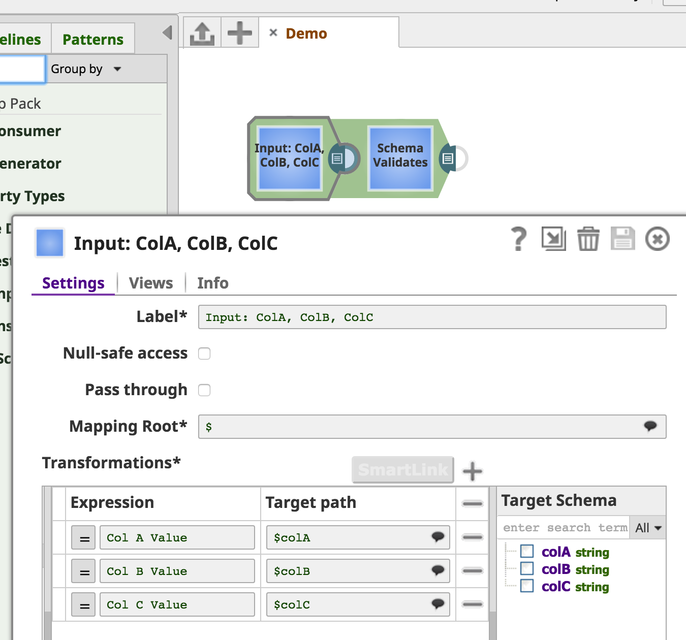
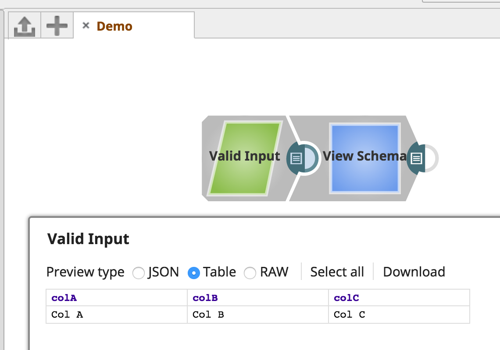
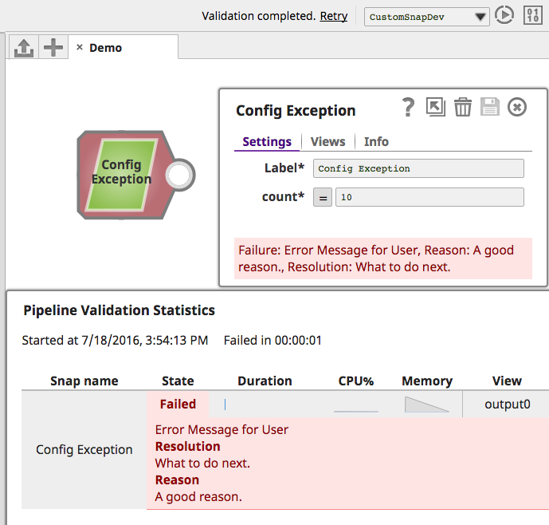
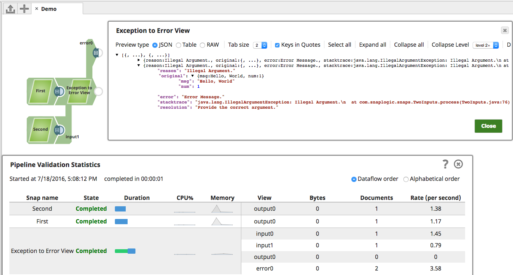
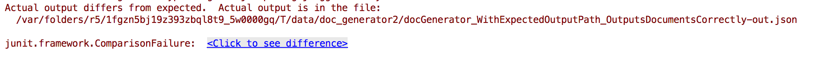
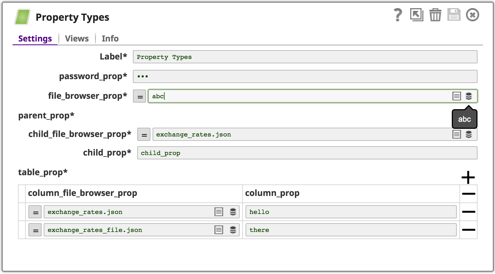

Introduction
This documentation guides a developer through the steps necessary to develop Snaps for the SnapLogic Elastic Integration Platform.
Snaps and Snap Packs
SnapLogic Snaps are modular collections of integration components built for a specific application or data source. Snaps shield both business users and developers from much of the complexity of the underlying application, data model, and service.

Snap Packs logically organize Snaps and are the deployable unit when adding/modifying Snaps to the SnapLogic Elastic Integration Platform. For instance, in the above example, the Aggregate Snap is part of the Transform Snap Pack.
Snaps may be related by functionality or share common code. A Snap Pack may contain a single Snap or multiple Snaps.
Snap Fundamentals
Snaps are streaming data processors. They can consume and/or produce Binary or Document data through input and output views, and can report error Documents to an optional error view.

They have metadata that define their view settings and configuration. They can read/poll from an endpoint, batch execute or process each input individually, and may write to another endpoint.
Snaps can provide design-time Suggest/lookup and Preview/validate data capabilities, or run in full execution mode.

Snaps vs Scripts
SnapLogic's Script Snap executes a JavaScript, Jython, or JRuby script using the JVM ScriptEngine mechanism.
Consider the following when deciding whether to develop a custom Snap vs using the Script Snap:
| Custom Snap | Script Snap |
|---|---|
| Supports easy configuration without coding | Working directly with code |
Supports pipeline _parameters |
Does not support pipeline _parameters |
| Supports Binary or Document input/output | Supports only Document input/output |
| Supports Accounts, simplify impersonation | Does not support Accounts |
| Supports debugging during development | Often awkward to debug |
| Supports unit testing during/after development | Cannot be unit tested |
| Java | JavaScript, Jython, or JRuby |
| Need to build/deploy/etc | No deployment, quick & simple |
Prerequisites
- Java 11 (JDK)
- Maven 3.2.1 or later
- A Snaplex
Setting up the Snaplex
A Snaplex is the data processing engine of the SnapLogic Elastic Integration Platform. A locally-installed/on-premises Snaplex (also known as a "Groundplex" or "JCC") will be used throughout this guide to develop, execute and debug a Snap.
Downloads
A Snaplex may be installed on:
- Linux
- Microsoft Windows
- macOS (for development only)
Installation
A Snaplex is the data processing engine of the SnapLogic Elastic Integration Platform. An Org admin can select Provision this user as a Snap Developer in the Update User dialog, automatically creating a dedicated Snaplex for that user to run and test pipelines. This Snaplex should be created in the Snap Developer’s project folder so that other users do not inadvertently run production pipelines on that Snaplex.
Linux & Microsoft Windows
Please visit the official SnapLogic documentation for detailed instructions for installing a Snaplex on Linux or Microsoft Windows.
macOS
$ cd ~
$ brew install wget
$ wget https://s3.amazonaws.com/elastic.snaplogic.com/snaplogic-sidekick...rpm
$ /usr/bin/ruby -e "$(curl -fsSL https://raw.githubusercontent.com/Homebrew/install/master/install)"
$ brew install rpm2cpio
$ rpm2cpio.pl snaplogic-sidekick...rpm | cpio -idvm
$ mkdir -p ~/opt/snaplogic/etc
$ unzip myplex.slpropz -d ~/opt/snaplogic/etc
$ echo 'export SL_ROOT=~/opt/snaplogic' >> ~/.bash_profile
$ source ~/.bash_profile
If successful, the output of the
cpiocommand will list the Snaplex files populating the newly created~/opt/snaplogicdirectory, for example:
$ rpm2cpio.pl snaplogic-sidekick-4.mrc244-x86_64.rpm | cpio -idvm
./opt/snaplogic/bin/functions
./opt/snaplogic/bin/jcc.sh
./opt/snaplogic/bin/logstash.sh
./opt/snaplogic/ldlib/libsapjco3.jnilib
./opt/snaplogic/ldlib/libsapjco3.so
./opt/snaplogic/pkgs/jre1.8.0_45/COPYRIGHT
...
./opt/snaplogic/run/lib/jcc.war
./opt/snaplogic/run/lib/logstash.jar
./opt/snaplogic/run/log
1044673 blocks
cdto your home directory- Instructions for downloading the
.rpmfile can be found here - Download and install Homebrew
- Install the
rpm2cpiolibrary - Extract the downloaded Snaplex
.rpmfile - Unzip the downloaded
.slpropzfile to theetcdirectory of your Snaplex - Export the
SL_ROOTenvironment variable to your~/.bash_profile
Running
$ cd ~/opt/snaplogic/run/lib
$ java -jar jcc.war jcc
If successful, the output of the
javacommand will be similar to this:
...
+- file:/Users/snapdev/opt/snaplogic/run/lib/jcc/zookeeper-3.4.6.jar
+- sun.misc.Launcher$AppClassLoader@42a57993
+- file:/Users/snapdev/opt/snaplogic/run/lib/jcc.war
+- sun.misc.Launcher$ExtClassLoader@14ae5a5
2016-07-01T00:59:04,505 I main [ ] Server listening for incoming connections
The simplest way to start the Snaplex is to run the packaged jcc.war file.
To check if the Snaplex started correctly, log in to the SnapLogic Dashboard:
Snap Anatomy 101
import com.snaplogic.api.ConfigurationException;
import com.snaplogic.api.ExecutionException;
import com.snaplogic.api.Snap;
import com.snaplogic.common.properties.builders.PropertyBuilder;
import com.snaplogic.snap.api.PropertyValues;
import com.snaplogic.snap.api.SnapCategory;
import com.snaplogic.snap.api.capabilities.Category;
import com.snaplogic.snap.api.capabilities.General;
import com.snaplogic.snap.api.capabilities.Version;
import com.snaplogic.snap.api.capabilities.Inputs;
import com.snaplogic.snap.api.capabilities.Outputs;
import com.snaplogic.snap.api.capabilities.Errors;
import com.snaplogic.snap.api.capabilities.ViewType;
@General(title = "Snap Name", purpose = "Description",
author = "Company Name", docLink = "http://www.docs.com/mysnap")
@Inputs(min = 0, max = 1, accepts = {ViewType.DOCUMENT})
@Outputs(min = 1, max = 1, offers = {ViewType.DOCUMENT})
@Errors(min = 1, max = 1, offers = {ViewType.DOCUMENT})
@Version(snap = 1)
@Category(snap = SnapCategory.READ)
public class MySnap implements Snap {
@Override
public void defineProperties(PropertyBuilder propertyBuilder) {
}
@Override
public void configure(PropertyValues propertyValues) throws ConfigurationException {
}
@Override
public void execute() throws ExecutionException {
}
@Override
public void cleanup() throws ExecutionException {
}
}
At its most basic, a Snap class declares the required name, view, version and category metadata annotations and implements the Snap interface.
Metadata annotations
@General: name, description, author, and documentation link for the Snap.@Inputs: specifies the minimum and maximum number of Input Views and the type of input they accept (JSON Documents or Binary data).@Outputs: specifies the minimum and maximum number of Output Views and the type of output they produce (JSON Documents or Binary data).@Errors: specifies whether an Error Views should be written to@Version: version number for the Snap (not to be confused with the Snap Pack version).@Category: categorizes the Snap and determines the icon/color of the Snap within the SnapLogic Designer.
Snap interface
The com.snaplogic.api.Snap interface that should be implemented by the Snap developers to convert their business logic into an entity that can be used inside SnapLogic Pipelines.
defineProperties
Defines the Snap properties using the given PropertyBuilder. This method is called during the compile phase and generates the settings Snap schema property that the SnapLogic Designer uses to build the user interface.
configure
Configures the Snap with the PropertyValues provided by the user's input to the Snap Settings. Input validation should be done here - if there is an issue with the provided input, a ConfigurationException should be thrown.
execute
Executes the Snap's business logic. Should an error be encountered, an ExecutionException may be thrown.
cleanup
Cleans up any suitable resources after the Snap execution. Again, should an error be encountered, an ExecutionException may be thrown.
Getting Started
$ mkdir ~/opt/snaplogic-dev
$ echo 'export SNAP_HOME=~/opt/snaplogic-dev' >> ~/.bash_profile
$ echo 'export JCC_DEBUG_PORT=9000' >> ~/.bash_profile
$ source ~/.bash_profile
If a healthy Snaplex is running locally, Snap Development may begin.
Make a directory where Snap Development will occur, export the location as the SNAP_HOME environment variable and set the port to use for debugging.
Debugging
$ cd ~/opt/snaplogic/run/lib
$ java -agentlib:jdwp=transport=dt_socket,server=y,address=${JCC_DEBUG_PORT},suspend=n -jar jcc.war jcc
This will wait to launch the JCC until you have attached the debugger.
The Snaplex/JCC supports debugging a Snap's execution with your chosen IDE. Simply launch the JCC with the additional agentlib parameter with shown value, and attach to it using your IDE's remote debugging capability.
Snap Maven Archetype
$ cd $SNAP_HOME
$ mvn org.apache.maven.plugins:maven-archetype-plugin:2.4:generate -DarchetypeCatalog=http://maven.clouddev.snaplogic.com:8080/nexus/content/repositories/thirdparty/
[INFO] Scanning for projects...
[INFO]
[INFO] ------------------< org.apache.maven:standalone-pom >-------------------
[INFO] Building Maven Stub Project (No POM) 1
[INFO] --------------------------------[ pom ]---------------------------------
[INFO]
[INFO] >>> maven-archetype-plugin:2.4:generate (default-cli) > generate-sources @ standalone-pom >>>
[INFO]
[INFO] <<< maven-archetype-plugin:2.4:generate (default-cli) < generate-sources @ standalone-pom <<<
[INFO]
[INFO]
[INFO] --- maven-archetype-plugin:2.4:generate (default-cli) @ standalone-pom ---
[INFO] Generating project in Interactive mode
[INFO] No archetype defined. Using maven-archetype-quickstart (org.apache.maven.archetypes:maven-archetype-quickstart:1.0)
Choose archetype:
1: http://maven.clouddev.snaplogic.com:8080/nexus/content/repositories/thirdparty/ -> com.snaplogic.tools:SnapArchetype (An archetype that creates a Snap Pack, with example Snaps provided)
Choose a number or apply filter (format: [groupId:]artifactId, case sensitive contains): : 1
Define value for property 'groupId': : com.snaplogic
Define value for property 'artifactId': : demosnappack
Define value for property 'version': 1.0-SNAPSHOT: :
Define value for property 'package': com.snaplogic: : com.snaplogic.snaps
Define value for property 'organization': : Partners
Define value for property 'assetPath': /Partners/shared: : /Partners/MyCompany/shared
Define value for property 'snapPack': demosnappack: : Demo Snap Pack
Define value for property 'user': : cc+partners@snaplogic.com (should match cc.username in $SL_ROOT/etc/keys.properties)
Confirm properties configuration:
groupId: com.snaplogic
artifactId: demosnappack
version: 1.0-SNAPSHOT
package: com.snaplogic.snaps
organization: Partners
assetPath: /Partners/MyCompany/shared
snapPack: Demo Snap Pack
user: cc+partners@snaplogic.com
Y: : y
[INFO] ----------------------------------------------------------------------------
[INFO] Using following parameters for creating project from Archetype: SnapArchetype:4.25
[INFO] ----------------------------------------------------------------------------
[INFO] Parameter: groupId, Value: com.snaplogic
...
~/.m2/settings.xml (needed if using Maven 3.8.1 or later to create the project from the archetype)
<?xml version="1.0"?>
<settings xmlns="http://maven.apache.org/SETTINGS/1.0.0" xmlns:xsi="http://www.w3.org/2001/XMLSchema-instance" xsi:schemaLocation="http://maven.apache.org/SETTINGS/1.0.0 https://maven.apache.org/xsd/settings-1.0.0.xsd">
<mirrors>
<mirror>
<id>thirdparty</id>
<name>Snaplogic-ThirdPartyMaven-Repository</name>
<url>http://maven.clouddev.snaplogic.com:8080/nexus/content/repositories/thirdparty</url>
<mirrorOf>Snaplogic-ThirdPartyMaven-Repository,thirdparty,SnapArchetype-repo</mirrorOf>
</mirror>
</mirrors>
</settings>
A Maven Archetype is a Maven project templating toolkit. SnapLogic provides SnapArchetype for quickly starting Snap development.
SnapArchetype ships with eight sample Snaps for demonstration purposes:
| Sample | Description |
|---|---|
| Single Doc Generator | Outputs a single document |
| Doc Consumer | Consumes documents |
| Doc Generator | Outputs n documents, where n is specified by the user as an expression |
| Suggest | Demonstrates suggest setting capabilities |
| Property Types | Shows creating a variety of different Snap UI settings |
| Two Inputs | Consuming from two different input sources |
| Two Inputs Two Outputs | Consuming from two different input sources, and outputting two different Documents |
| Schema Example | Demonstrating input and output schemas for IO validation |
| Character Counter | Binary input and output views |
| Currency Converter | Demonstrates dependency injection |
| SnapWithAccount | Authenticating with an ExampleAccount |
Once SnapArchetype has been generated, it can be imported as a Maven project into your IDE (IntelliJ IDEA, Eclipse, Netbeans).
Project Structure
demosnappack
├── .mvn
│ └── maven.config
├── pom.xml
├── settings.xml
└── src
├── main
│ ├── assembly
│ │ ├── final.xml
│ │ └── snap.xml
│ ├── config
│ │ └── directives
│ ├── java
│ │ └── com
│ │ └── snaplogic
│ │ └── snaps
│ │ ├── CharacterCounter.java
│ │ ├── CurrencyConverter.java
│ │ ├── DocConsumer.java
│ │ ├── DocGenerator.java
│ │ ├── ExampleAccount.java
│ │ ├── PropertyTypes.java
│ │ ├── SchemaExample.java
│ │ ├── SingleDocGenerator.java
│ │ ├── SnapWithAccount.java
│ │ ├── Suggest.java
│ │ ├── TwoInputs.java
│ │ └── TwoInputsTwoOutputs.java
│ └── resources
└── test
├── java
│ └── com
│ └── snaplogic
│ └── snaps
│ ├── CharacterCounterTest.java
│ ├── CurrencyConverterTest.java
│ ├── DocConsumerTest.java
│ ├── DocGeneratorTest.java
│ ├── PropertyTypesTest.java
│ ├── SchemaExampleTest.java
│ ├── SingleDocGeneratorTest.java
│ ├── SnapWithAccountTest.java
│ ├── SuggestTest.java
│ └── TwoInputsTwoOutputsTest.java
└── resources
└── data
├── character_counter
│ ├── binary_input.txt
│ ├── character_counter_input_pointer.json
│ └── expected
│ └── characterCounter_WithSnapLogicAsInput_CountsOccurrences
│ ├── outbin-output0-data-0.data
│ └── outbin-output0-headers.json
├── currency_converter
│ ├── exchange_rates_file.json
│ ├── exchange_rates_from_file_properties.json
│ ├── expected
│ │ ├── currencyConversion_WithCustomInjector_ConvertsCorrectly-out.json
│ │ ├── currencyConversion_WithExchangeRatesDataSupplier_ConvertsCorrectly-out.json
│ │ ├── currencyConversion_WithExchangeRatesFromDataFiles_ConvertsCorrectly-out.json
│ │ └── currencyConverstion_WithFieldMockedDirectly_ConvertsCorrectly-out.json
│ └── input_documents.json
├── doc_generator
│ ├── doc_generator_properties.json
│ └── expected
│ ├── docGenerator_WithExpectedErrorPath_OutputsErrorDocumentCorrectly-err.json
│ ├── docGenerator_WithExpectedOutputPath_OutputsDocumentsCorrectly-out.json
│ ├── docGenerator_WithProperties_OutputsCorrectNumberOfDocuments-out.json
│ └── docGenerator_WithPropertyOverrides_OutputsCorrectNumDocuments-out.json
├── property_types
│ ├── expected
│ │ └── propertyTypes_WithFieldsCompositesAndTables_OutputsEvaluatedValuesDocument-out.json
│ └── property_types_properties.json
├── schema_example
│ ├── expected
│ │ ├── schemaExample_WithInvalidData_OutputsErrorDocumentOnly-err.json
│ │ └── schemaExample_WithValidData_OutputsDocument-out.json
│ ├── schema_invalid_input.data
│ └── schema_valid_input.data
├── single_doc_generator
│ └── expected
│ └── singleDocGenerator_WithOutputView_OutputsCorrectNumDocuments-out.json
├── snap_with_account
│ ├── account_properties.json
│ └── expected
│ └── snapWithAccount_WithAccountProperties_OutputsCorrectToken-out.json
├── suggest
│ ├── expected
│ │ └── suggest_WithSuggestProperty_WritesResultsToSpecialOutputView-out.json
│ └── suggest_properties.json
└── two_inputs_two_outputs
├── expected
│ └── twoInputsTwoOutputs_WithParentsAndChildren_GroupsByGender-out.json
└── input_files.json
A Snap Project's structure follows Maven's Standard Directory Layout.
src/main/assembly
final.xml and snap.xml are used by the maven-assembly-plugin to build the Snap Pack zip file that can be uploaded to the SnapLogic Manager. You should not need to alter these files.
src/main/config
directives contains basic Snap Pack metadata.
The NAME property is the label of Snap Pack. This is visible when the SnapLogic Designer is grouping by Snap Pack e.g. the Snaps related to SQL Server are grouped under "SQL Server".

The ASSET_DIR_PATH property instructs the Snap Pack Installer to deploy the Snap Pack to the specified asset path.
A customer will be deploying to an Organization root, Project, or Project Spaces asset path e.g. /snaplogic/shared, /snaplogic/projects/rhowlett, and /snaplogic/robin/shared respectively (where "snaplogic" is the Organization name assigned by SnapLogic to your account, "rhowlett" is the Project folder name, and "robin" is the Project Spaces.
This value can be changed dynamically at build time using the -Dasset_path Maven parameter (especially useful with a continuous integration tool, or if your company has multiple Organizations or wishes to deploy to multiple asset path locations).
src/main/java and src/main/resources
Files and folders within these directories will be on the classpath, as per Maven convention. This is where you will write your Snap code.
src/test/java and src/test/resources
Files and folders within these directories will be on the test classpath, as per Maven convention. Unit and integration tests (and supporting resources) are located in these directories.
pom.xml
This is the Maven POM file. You will change this file when registering new Snaps and Accounts, when new dependencies or plugins are required, or when needing to modify the build properties.
The dependencyManagement section imports the SnapLogic BOM file, com.snaplogic.snaps:bom, to simplify dependency management:
<dependencyManagement>
<dependencies>
<!-- import dependency management declarations from the SnapLogic snaps BOM -->
<dependency>
<groupId>com.snaplogic.snaps</groupId>
<artifactId>bom</artifactId>
<version>${snaplogic.snaps.version}</version>
<type>pom</type>
<scope>import</scope>
</dependency>
</dependencies>
</dependencyManagement>
The dependencies section of the POM file can reference dependencies managed by the BOM file without specifying their version:
<!-- SnapLogic jsdk + japis dependencies, declared in bom -->
<dependency>
<groupId>com.snaplogic</groupId>
<artifactId>jsdk</artifactId>
</dependency>
<dependency>
<groupId>com.snaplogic</groupId>
<artifactId>jutils</artifactId>
</dependency>
<dependency>
<groupId>com.snaplogic</groupId>
<artifactId>jtest</artifactId>
<scope>test</scope>
</dependency>
<!-- third-party dependencies bundled in jcc and declared in bom with provided scope -->
<dependency>
<groupId>com.fasterxml.jackson.core</groupId>
<artifactId>jackson-databind</artifactId>
</dependency>
...
The POM also includes other dependencies needed by the sample Snaps:
<dependency>
<groupId>commons-codec</groupId>
<artifactId>commons-codec</artifactId>
</dependency>
<dependency>
<groupId>commons-io</groupId>
<artifactId>commons-io</artifactId>
</dependency>
<dependency>
<groupId>com.google.guava</groupId>
<artifactId>guava</artifactId>
</dependency>
<dependency>
<groupId>junit</groupId>
<artifactId>junit</artifactId>
<scope>test</scope>
</dependency>
...
Developing Snaps
The properties section of the POM file has two properties, snap.classes and account.classes, which list the names
of the Java classes which define the Snaps and Accounts provided by this Snap pack:
<!-- This identifies the classes which represent the actual Snaps
(and become accessible on the Snaplex/JCC after deployment).
After creating a new Snap class, add it here.
-->
<snap.classes>
com.snaplogic.snaps.CharacterCounter,
com.snaplogic.snaps.CurrencyConverter,
com.snaplogic.snaps.DocConsumer,
com.snaplogic.snaps.DocGenerator,
com.snaplogic.snaps.PropertyTypes,
com.snaplogic.snaps.SchemaExample,
com.snaplogic.snaps.SingleDocGenerator,
com.snaplogic.snaps.SnapWithAccount,
com.snaplogic.snaps.Suggest,
com.snaplogic.snaps.TwoInputs,
com.snaplogic.snaps.TwoInputsTwoOutputs
</snap.classes>
<!-- This identifies the classes which represent the actual Accounts
(and become accessible on the Snaplex/JCC after deployment).
After creating a new Account class, add it here.
-->
<account.classes>
com.snaplogic.snaps.ExampleAccount
</account.classes>
pom.xml
SnapLogic provides the JSDK, a library of Java APIs to assist with building Snaps.
The Snap Maven Archetype ships with sample Snaps that we can use to highlight the JSDK's capabilities.
Basic Snap Implementation
// Set the Snap title, description etc
// Also, use the "docLink" parameter to set a link to the documentation
@General(title = "Single Doc Generator", purpose = "Generates one document and completes",
author = "Your Company Name", docLink = "http://yourdocslinkhere.com")
// This Snap does not permit input views for demonstration purposes, however, in practice, there
// should almost always be an input view
@Inputs(min = 0, max = 1, accepts = {ViewType.DOCUMENT})
// This snap has exactly one document output view (min = 1, max = 1).
// Snaps can also have binary output i.e., offers={ViewType.BINARY}
@Outputs(min = 1, max = 1, offers = {ViewType.DOCUMENT})
// This snap has an optional document error view(min = 1, max = 1).
// Snaps can also have binary error view i.e., offers={ViewType.BINARY}
@Errors(min = 1, max = 1, offers = {ViewType.DOCUMENT})
// Version number of the snap
@Version(snap = 1)
// This snap belongs to SnapCategory.READ as it is idempotent.
@Category(snap = SnapCategory.READ)
public class SingleDocGenerator implements Snap {
private static final Logger log = LoggerFactory.getLogger(SingleDocGenerator.class);
int counter = 0;
@Inject
private DocumentUtility documentUtility;
@Inject
private OutputViews outputViews;
@Override
public void defineProperties(PropertyBuilder propertyBuilder) {
}
@Override
public void configure(PropertyValues propertyValues)
throws ConfigurationException {
}
@Override
public void execute() throws ExecutionException {
counter++;
log.debug("counter=" + counter);
/*
* Write a single document to outputView. The next snap in the pipe will
* only ever see a single document from this snap.
*/
Map<String, String> data = new LinkedHashMap<String, String>() {{
put("key", "value");
}};
outputViews.write(documentUtility.newDocument(data));
}
@Override
public void cleanup() throws ExecutionException {
}
}
SingleDocGenerator is one of the sample Snaps included in the Snap Archetype.
It is an uncomplicated Snap that generates a single document, without requiring any input data or user input. It implements the Snap interface.

Snap Anatomy 101 explains the purpose of each annotation and the overridden methods. The comments above each annotation describe their specific usage for this Snap.
Snap Lifecycle
At build time, defineProperties is called to generate the Snap Schema. This will construct the Snap's settings tab.
At runtime, the Snap is initialized by the Snaplex/JCC. Next, Guice injects the various declared dependency instances (documentUtility and outputViews in this Snap).
The Snaplex's runtime then instructs the Snap's configure method to be called to validate and/or operate on any provided PropertyValues created from a user's interaction with the Snap's settings.
Next, the execute method is called. This is where the majority of the Snap's business logic will initiate.
Finally, the cleanup method is called to clean-up any resources used.
Due to no user input being required, nor clean-up needed, the defineProperties, configure, and cleanup methods have no implementation for this Snap.
The execute method increments an int member variable, logs a debug statement, creates data, and generates a new Document with this data to be subsequently written to the output view.
Logging
$ brew install lnav
$ lnav -i https://snaplogic.box.com/v/lnav-log-format
$ lnav ~/opt/snaplogic/run/log/jcc.json
2016-07-13T13:10:35.072 DEBUG [Single Doc Generator[5d64230b-fa22-4696-b736-05b599b06ba9 -- 9a3a88ef-d5b1-4715-945d-0c6a595f7940]] (SingleDocGenerator.java:77) - counter=1 │
snrd: 9a3a88ef-d5b1-4715-945d-0c6a595f7940 │
com.snaplogic.logging.id: 57868ceb64cabf28873d20a7.5d64230b-fa22-4696-b736-05b599b06ba9.9a3a88ef-d5b1-4715-945d-0c6a595f7940 │
plrd: 5d64230b-fa22-4696-b736-05b599b06ba9 │
snlb: Single+Doc+Generator │
ccid: 57868ceb64cabf28873d20a7 │
snii: 898c5459-0419-455c-9493-a0d6fbae9c8a │
xid: a83bcfdd-2bc7-480e-bf1e-5fbdfef3c726
In the "Single Doc Generator" sample Snap above, an SLF4J Logger static class variable is declared and initialized and is used to write debug messages to the Snaplex/JCC's log.
For example, when previewing or executing the "Single Doc Generator" Snap in the Designer, the value of the counter variable is written to the log.
This entry can then be viewed in the Snaplex's jcc.json log file (we recommend using LNAV, the log file navigator created by SnapLogic's own Timothy Stack):
Creating Documents with DocumentUtility
package com.snaplogic.snap.api;
public interface DocumentUtility {
...
/**
* Returns a new document with the given data for the given incoming document.
*
* @param incomingDocument
* @param data
* @return document
*/
Document newDocumentFor(Document incomingDocument, Object data);
/**
* Returns a new document object with the given data and merges the original data into the
* new returned document.
* This allows to "pass through" the data from an incoming document and merge it into the new
* document being written to the output. The new document will have an {@literal original}
* key holding the original document to avoid data being overwritten when merging the data
* with original data
*
* @param document as the document being written
* @param originalData as original data being merged with the document.
*
* @return document
* @throws UnsupportedOperationException only data and originalData of type Map is currently
* supported
*/
Document newDocument(Document document, Object originalData);
...
}
Guice's @Inject annotation will instruct the Snaplex/JCC to inject an instance of DocumentUtility and assign it to documentUtility (see "Single Doc Generator" Snap above).
Documents may be created with given data.
Lineage
For Snaps that have input views and process documents, you should preserve data lineage (required by Ultra Pipelines) between the new output document to be written and the incoming original document by using one of the highlighted DocumentUtility methods:
Establishes lineage between the new document and the incoming original document, but discards the incoming data:
Document newDocumentWithLineage = documentUtility.newDocumentFor(originalDocument, data);
Establishes lineage between the new document and the incoming original document and "passes through" the incoming document's data by adding a key named "original" (containing the incoming original document's data) to the new document:
Document seed = documentUtility.newDocument(newData);
Document newDocumentWithLineage = documentUtility.newDocument(seed, originalDocument);
Writing Documents to an Output View
package com.snaplogic.snap.api;
/**
* OutBoundViews is the base interface for all the output views - {@link OutputView} and
* {@link com.snaplogic.snap.view.ErrorView}
*/
public interface OutBoundViews<V extends OutputView> extends Views<V> {
...
/**
* Writes the given document to all the outbound views of the Snap.
*
* @param document
*/
void write(Document document);
/**
* Writes a new document object with the given data and merges the original data into the
* new returned document.
* This allows to "pass through" the data from an incoming document and merge it into the new
* document being written to the output. The new document will have an {@literal original}
* key holding the original document to avoid data being overwritten when merging the data
* with original data.
*
* @param document as the document being written
* @param originalData as original data being merged with the document.
*
* @return document
* @throws UnsupportedOperationException only data and originalData of type Map is currently
* supported
*/
void write(Document document, Object originalData);
...
}
Guice's @Inject annotation will instruct the Snaplex/JCC to inject an instance of OutputViews and assign it to outputViews (see "Single Doc Generator" Snap above).
Lineage
Similarly to DocumentUtility, output views can establish lineage between incoming and outgoing documents. This is useful when an outgoing Document has been created without lineage but the incoming original document is still accessible:
outputViews.write(documentWithoutLineage, originalDocument);
Unit Testing Snaps with SnapTestRunner
import com.snaplogic.snap.test.harness.OutputRecorder;
import com.snaplogic.snap.test.harness.SnapTestRunner;
import com.snaplogic.snap.test.harness.TestFixture;
import com.snaplogic.snap.test.harness.TestResult;
import org.junit.runner.RunWith;
import static org.junit.Assert.assertEquals;
import static org.junit.Assert.assertNull;
/**
* Tests that the {@link SingleDocGenerator} Snap sent one Document to the output view.
*/
@RunWith(SnapTestRunner.class)
public class SingleDocGeneratorTest {
// "snap" attribute targets the Snap being executed
// "outputs" defines the name of the output view to write to
@TestFixture(snap = SingleDocGenerator.class,
outputs = "output0")
public void singleDocGenerator_WithOutputView_OutputsCorrectNumDocuments(TestResult testResult)
throws Exception {
OutputRecorder outputRecorder = testResult.getOutputViewByName("output0");
assertEquals(1, outputRecorder.getRecordedData().size());
}
}
The SingleDocGeneratorTest class outlines basic usage of jtest, a JUnit-based Snap unit testing framework.
jtest provides SnapTestRunner, a custom JUnit test runner which simulates the targeted Snap being executed within a pipeline.
Test methods are annotated with the @TestFixture annotation, which specifies what Snap implementation to use, input/output/error views configured, property settings specified, accounts associated etc.
The test method should take a single TestResult argument, which can be used within the test to determine whether the correct output was written (using an OutputRecorder), if errors occurred etc.
In the SingleDocGeneratorTest sample provided, we can see that the test method focuses on examining that the TestResult did not receive any thrown exceptions, and that the declared output view registered the expected number of documents processed.
The "jtest: Snap Unit Testing Framework" section contains much more information about testing Snaps, including working towards a purely declarative style of Snap unit testing using just the test method's @TestFixture annotation.
Reading Documents from an Input View
@General(title = "Doc Consumer", purpose = "Consumes the incoming documents",
author = "Your Company Name", docLink = "http://yourdocslinkhere.com")
@Inputs(min = 1, max = 1, accepts = {ViewType.DOCUMENT})
@Outputs(min = 0, max = 0, offers = {ViewType.DOCUMENT})
@Errors(min = 1, max = 1, offers = {ViewType.DOCUMENT})
@Version(snap = 1)
@Category(snap = SnapCategory.WRITE)
public class DocConsumer implements Snap {
private static final Logger log = LoggerFactory.getLogger(DocConsumer.class);
private final AtomicInteger count = new AtomicInteger(0);
@Inject
private InputViews inputViews;
@Override
public void defineProperties(PropertyBuilder propertyBuilder) {
}
@Override
public void configure(PropertyValues propertyValues) throws ConfigurationException {
}
@Override
public void execute() throws ExecutionException {
InputView inputView = inputViews.get();
Iterator<Document> documentIterator = inputViews.getDocumentsFrom(inputView);
while (documentIterator.hasNext()) {
Document doc = documentIterator.next();
log.debug("Received Document {}", doc.toString());
count.getAndIncrement();
}
}
@Override
public void cleanup() throws ExecutionException {
log.debug("Consumed {} documents", count.get());
}
}
The DocConsumer sample Snap that ships with the Snap Archetype demonstrates how to read from a Snap's input view.
Similarly to Writing Documents to an Output View, Guice will inject an instance of InputViews and assign it to the inputViews variable.
inputViews.get() returns the default view associated with the Snap. If the Snap has more than one view, a ViewException is thrown.
An Iterator of Document objects can then be acquired by asking the InputViews instance for the Document objects associated with the specified InputView instance.
Iterating over the Document objects, the Snap logs that a document was consumed and increments its AtomicInteger counter.
The cleanup() method, which is called after the Snap has completed its execution phase, logs the total number of documents consumed.
Snap Categories
The Doc Consumer Snap's category (SnapCategory.WRITE) differs from SingleDocGenerator's SnapCategory.READ category.
This difference between category types manifests in three ways:
- the color and icon of the Snaps are different,
- the "Doc Consumer" Snap inherits an "Execute during Preview" setting to toggle whether the Snap will execute when the Pipeline is validating/previewing,
- the Snaps are separated when "Group By Type" is chosen.
| Icon | Snap Category | Description |
|---|---|---|
 |
READ | Sources of data in the pipeline. Example: File Reader |
| WRITE | Data destinations or sinks in the pipeline. They also inherit an "Execute during Preview" setting. Example: File Writer |
|
 |
PARSE | Parse unstructured input data into structured output data. Example: CSV Parser |
 |
FORMAT | Change data format. Example: CSV Formatter |
 |
TRANSFORM | Modify data significantly. Example: Aggregate, Join |
 |
FLOW | Change the direction or output of data in the pipeline. Example: Filter, Router |
As you develop Snaps, choose the appropriate Snap Category for your use cases.
Bootstrapping with SimpleSnap
/**
* This snap accepts two inputs and outputs to a single output. To use it, feed
* it two JSON documents. It will output a single stream which consists
* of the combination of the two inputs, plus an additional "Processed" field in each.
*
* <p>This Snap extends {@link SimpleSnap} (instead of implementing {@link Snap}).</p>
* <p>This means that instead of having a method called 'execute' which is called once,
* it has a method called 'process' which is called for every document the snap receives.
* This means you do not have to iterate over incoming documents as 'process' does that
* for you.
*/
@General(title = "Two Inputs", purpose = "Accepts two inputs (expected phone books, merges them)",
author = "Your Company Name", docLink = "http://yourdocslinkhere.com")
@Inputs(min = 2, max = 2, accepts = {ViewType.DOCUMENT})
@Outputs(min = 1, max = 1, offers = {ViewType.DOCUMENT})
@Errors(min = 0, max = 1, offers = {ViewType.DOCUMENT})
@Version(snap = 1)
@Category(snap = SnapCategory.READ)
public class TwoInputs extends SimpleSnap {
private static final Logger log = LoggerFactory.getLogger(TwoInputs.class);
private int count = 0;
@Inject
private OutputViews outputViews;
@Override
public void defineProperties(PropertyBuilder propertyBuilder) {
}
@Override
public void configure(PropertyValues propertyValues)
throws ConfigurationException {
}
@Override
public void process(Document document, String inputViewName) {
// Demonstrates how to create a new copy of the document
Document newdoc = document.copy();
// get a map representation of the document
// NOTE: we are *not* duplicating the data.
// We will *not* have to convert the map back to a doc.
// It's just a pointer representation.
@SuppressWarnings("unchecked")
Map<String, Object> data = newdoc.get(Map.class);
// assign a value to a field of the map
// In this case, we are just assigning 'processed=True'
// to signal that the document has been processed.
data.put("processed", "True");
count++;
// log current document number
log.debug("count=" + count);
// log current document
log.debug("document: " + newdoc.toString());
// send new document to next snap
outputViews.write(newdoc, document);
}
@Override
public void cleanup() throws ExecutionException {
// Log final number of documents processed
log.debug("Final count=" + count);
}
}
Now that we understand the basics of a Snap, we can extend the SimpleSnap class to have some of the heavy lifting done for us.
SimpleSnap provides all the necessary hooks for writing a new Snap. A Snap author can write a new Snap by simply extending SimpleSnap, adding the desired metadata annotations (SimpleSnap already declares an @Errors view that can be overridden), and providing the implementation for the process method (and optionally, for the defineProperties and configure methods too).
SimpleSnap takes care of iterating over the incoming documents (if any) and allowing you to process each document at a time. It also handles the dependency injection for the Input/Output/ErrorViews, the DocumentUtility, and the ExecutionUtil (which handles iterating over the documents in the incoming input view(s) on your behalf, and writing any thrown SnapDataException instances to the error view).

There are a number of other "Simple" Snap implementations that can help getting started quickly, including:
SimpleReadSnapSimpleWriteSnapSimpleBinarySnapSimpleBinaryReadSnapSimpleTransformSnapSimpleBinaryWriteSnap
Writing Binary Data to an Output View
/**
* A Snap that counts the number of occurrences of each letter in the English language for the
* incoming data, and writes the result to a binary output view
*/
@General(title = "Character Counter", purpose = "Demo writing to Binary Output View",
author = "Your Company Name", docLink = "http://yourdocslinkhere.com")
@Outputs(min = 1, max = 1, offers = ViewType.BINARY)
@Errors(min = 1, max = 1, offers = ViewType.DOCUMENT)
@Version(snap = 1)
public class CharacterCounter extends SimpleBinaryWriteSnap {
...
@Override
protected void process(final Document header, final ReadableByteChannel readChannel) {
final StringBuilder sb = new StringBuilder();
// Guava Multiset
final Multiset<Character> bagOfChars = HashMultiset.create();
try (InputStream inputStream = Channels.newInputStream(readChannel)) {
Reader reader = new InputStreamReader(new BufferedInputStream(inputStream), UTF_8);
// read in each character
int characterRead;
while ((characterRead = reader.read()) != -1) {
// add the lowercase version of the character to the Multiset
bagOfChars.add((char) Character.toLowerCase(characterRead));
}
} catch (IOException e) {
errorViews.write(new SnapDataException(e, e.getMessage()), header);
}
try {
// for each letter of English alphabet, write a line with the number of times
// it appeared in the input data
for (char letter = 'a'; letter <= 'z'; letter++) {
sb.append(letter).append(":").append(bagOfChars.count(letter))
.append(System.lineSeparator());
}
} catch (Exception e) {
// write to the error view when a problem processing the input data is encountered
SnapDataException ex = new SnapDataException(e, "Unable to complete counting "
+ "characters from input data.").withResolutionAsDefect();
LinkedHashMap<String, String> data = new LinkedHashMap<>();
data.put("content", sb.toString());
errorViews.write(ex, documentUtility.newDocument(data));
return;
}
outputViews.write(new BinaryOutput() {
@Override
public Document getHeader() {
return header;
}
@Override
public void write(WritableByteChannel writeChannel) throws IOException {
try (OutputStream outputStream = Channels.newOutputStream(writeChannel)) {
IOUtils.write(sb.toString(), outputStream, UTF_8);
}
}
});
}
...
}
While JSON-based Documents offer the greatest flexibility of manipulating data within a pipeline, Binary data has advantages too. The costs associated with parsing and formatting data to JSON are avoided, and it can allow easier integration with processes running externally to the pipeline.
The CharacterCounter sample Snap shown demonstrates writing to a binary output view. It counts the number of times each letter of the English alphabet appears in the incoming binary data, and then writes the results to the binary output view (or, if there were any exceptions, creates an error Document and writes that to the error view).
In the sample, the process() method's implementation writes an anonymous BinaryOutput instance to the Snap's output view.
The provided ReadableByteChannel argument is used to create an InputStream. The logic for counting each occurrence of each letter then follows before the results are written to an OutputStream, which is sent the write() method's WritableByteChannel, and then on to the Snap's binary output view:
Reading Binary Data from an Input View
package com.snaplogic.snap.api.write;
...
@Inputs(min = 1, max = 1, accepts = {ViewType.BINARY})
@Outputs(min = 0, max = 0)
@Category(snap = SnapCategory.WRITE)
public abstract class SimpleBinaryWriteSnap extends SimpleBinarySnap {
@Inject
private InputViews inputViews;
// called by SimpleBinarySnap.execute()
@Override
protected void doWork() {
for (InputView inputView : inputViews) {
for (BinaryInput binaryData : inputViews.binaryInputs(inputView)) {
ReadableByteChannel readChannel = null;
try {
readChannel = binaryData.getChannel();
process(binaryData.getHeader(), readChannel);
} catch (IOException e) {
throw new ExecutionException(e,
EXCEPTION_WHILE_READING_FROM_BINARY_INPUT);
} finally {
IOUtils.closeQuietly(readChannel);
}
}
}
}
/**
* Processes the incoming binary data.
*/
protected abstract void process(Document header, ReadableByteChannel readChannel);
}
The CharacterCounter class above extends the abstract SimpleBinaryWriteSnap class which, similarly to Bootstrapping with SimpleSnap, provides some sensible default values for metadata annotations and some initial implementation.
The doWork() method iterates over the Snap's binary input views, returning a BinaryInput instance for each view. The BinaryInput contains a ReadableByteChannel (which can read the bytes of the incoming binary data) and a Document header containing basic metadata (content-type etc.).
As shown in the "Character Counter" sample above, these can then be used to create an InputStream or simliar to access and/or manipulate the binary data.
Headers
Binary Headers are Documents used to store useful metadata about the binary data stream.
When creating BinaryOutput instances, a Document header should be created and returned in getHeader().
Accepting User Input with PropertyBuilder
@General(title = "Doc Generator", purpose = "Generates documents based on the configuration",
author = "Your Company Name", docLink = "http://yourdocslinkhere.com")
@Inputs(min = 0, max = 1, accepts = {ViewType.DOCUMENT})
@Outputs(min = 1, max = 1, offers = {ViewType.DOCUMENT})
@Errors(min = 1, max = 1, offers = {ViewType.DOCUMENT})
@Version(snap = 1)
@Category(snap = SnapCategory.READ)
public class DocGenerator implements Snap {
private static final String COUNT = "count";
// Document utility is the only way to create a document
// or manipulate the document header
@Inject
private DocumentUtility documentUtility;
@Inject
private OutputViews outputViews;
@Inject
private ErrorViews errorViews;
private int count;
@Override
public void defineProperties(PropertyBuilder propertyBuilder) {
propertyBuilder.describe(COUNT, "Number of documents to create")
.type(SnapType.INTEGER).required().add();
}
@Override
public void configure(PropertyValues propertyValues) throws ConfigurationException {
Number countValue = propertyValues.get(COUNT);
count = countValue.intValue();
}
@Override
public void execute() throws ExecutionException {
if (count < 0) {
SnapDataException snapDataException =
new SnapDataException(String.format("Invalid count value %d", count))
.withReason("Value of count property cannot be negative")
.withResolution("Ensure the count property is greater than or equal " +
"to zero");
errorViews.write(snapDataException);
}
for (int i = 0; i < count; i++) {
Map<String, String> data = new LinkedHashMap<>();
data.put("key", "value" + (i + 1));
outputViews.write(documentUtility.newDocument(data));
}
}
@Override
public void cleanup() throws ExecutionException {
// NOOP
}
}
The DocGenerator Snap is similar to the SingleDocGenerator Snap, except the number of documents generated is configurable through user input:

To accept user input, the defineProperties method is used.
As described earlier, defineProperties is called when the Snap is being built. It constructs the Snap Schema which the Designer UI interprets and assembles into the Snap's Settings tab.
In DocGenerator.defineProperties(), a required count property of type SnapType.INTEGER is described and added to the provided PropertyBuilder instance.
Once the user has input their data and the Snap is executing, the configure method can access the data through the provided PropertyValues instance. As shown, this could be stored in an instance variable and used in the Snap's execute() method.
See the PropertyBuilder Reference section for more examples.
Validating User Input
The SnapLogic Platform will attempt to provide some basic type validation on user input:
If more advanced validation is required, provide the implementation in the configure method and throw a ConfigurationException when invalid input is encountered. See Exceptions and Error Views for more.
Expression-enabled Properties
public class DocGenerator implements Snap {
private static final String COUNT = "count";
private static final Document NO_DOCUMENT = null;
@Inject
private DocumentUtility documentUtility;
@Inject
private OutputViews outputViews;
private int count;
@Override
public void defineProperties(PropertyBuilder propertyBuilder) {
propertyBuilder.describe(COUNT, "Number of documents to create")
.type(SnapType.INTEGER)
.required()
.expression()
.add();
}
@Override
public void configure(PropertyValues propertyValues) throws ConfigurationException {
ExpressionProperty countValueExp = propertyValues.getAsExpression(COUNT);
// evaluate the expression directly (without the context of a Document)
BigInteger countValue = countValueExp.eval(NO_DOCUMENT);
count = countValue.intValue();
}
@Override
public void execute() throws ExecutionException {
for (int i = 0; i < count; i++) {
Map<String, String> data = new LinkedHashMap<>();
data.put("key", "value" + (i + 1));
outputViews.write(documentUtility.newDocument(data));
}
}
@Override
public void cleanup() throws ExecutionException {
}
}
Snaplogic's Expression Language is an incredibly powerful tool available to Snaps. Using a JavaScript-like syntax, users have access to functions and properties to dynamically set property values.
Comparing to the previous implementation of DocGenerator, we can see that .expression() has been added to the propertyBuilder().
The configure method's BigInteger countValue local variable has been replaced by the ExpressionProperty countValueExp local variable, which is retrieved from the PropertyValues with the getAsExpression method, passing the field name "count" in. The countValueExp expression property is evaluated against null (as there is no incoming document to evaluate against e.g. when referencing a key in the incoming document), so the expression is evaluated directly. Since a number value was evaluated, we assign it to a local variable of type BigInteger, and then get its intValue().
Within execute(), we can then use the count in the loop.
To demonstrate this new capability, we can use a "count" Pipeline Property and then reference this in the Snap within a parseInt expression function:
For composite and table properties, the getExpressionPropertyFor() method can be used to evaluate child properties embedded in a parent. See this example provided in the reference DemoSnapPack GitHub repository.
Suggesting Property Values
/**
* This Snap has one output and writes one document that contains the suggested
* value.
*
* <p>This snap demonstrates the suggest value functionality that uses the
* partial configuration information to suggest a property value.</p>
*/
@Version(snap = 1)
@General(title = "Suggest", purpose = "Demo suggest functionality.",
author = "Your Company Name", docLink = "http://yourdocslinkhere.com")
@Inputs(min = 0, max = 1, accepts = {ViewType.DOCUMENT})
@Outputs(min = 1, max = 1, offers = {ViewType.DOCUMENT})
@Errors(min = 1, max = 1, offers = {ViewType.DOCUMENT})
@Category(snap = SnapCategory.READ)
public class Suggest implements Snap {
public static final String PROP_NAME = "name";
public static final String PROP_ECHO = "echo";
private String valueToWrite;
@Inject
private DocumentUtility documentUtility;
@Inject
private OutputViews outputViews;
@Override
public void defineProperties(final PropertyBuilder propertyBuilder) {
propertyBuilder.describe(PROP_NAME, PROP_NAME)
.add();
propertyBuilder.describe(PROP_ECHO, PROP_ECHO)
.withSuggestions(new Suggestions() {
@Override
public void suggest(SuggestionBuilder suggestionBuilder,
PropertyValues propertyValues) {
String name = propertyValues.get(PropertyCategory.SETTINGS, PROP_NAME);
suggestionBuilder.node(PROP_ECHO).suggestions(name);
}
}).add();
}
@Override
public void configure(final PropertyValues propertyValues) throws ConfigurationException {
valueToWrite = propertyValues.get(PROP_ECHO);
}
@Override
public void execute() throws ExecutionException {
Map<String, String> data = new LinkedHashMap<String, String>() {{
put("key", valueToWrite);
}};
outputViews.write(documentUtility.newDocument(data));
}
@Override
public void cleanup() throws ExecutionException {
// NOOP
}
}
A Snap can make "suggestions" to the user about property values. This is useful to lookup appropriate values using either another data source or the input value of a different property.
In the "Suggest" sample Snap, the user enters in a value for the "name" property. The "echo" property's suggest action then reads that value and allows the user to select it.

The suggest capability is enabled through use of the the PropertyBuilder.withSuggestions(Suggestions suggestions) method. Implementations of the Suggestions interface should be provided to it.
The Suggestions instance (often an anonymous instance) implements the single suggest method. It provides, as method arguments, references to the SuggestionBuilder and the PropertyValues.
Using the SuggestionBuilder instance, we can configure simple String varargs for suggestions() for a selected node() that will result in a list of suggested values.
Suggestions within Tables and Composites
To add suggestions to a Table element property, select the table node and use the over() builder method:

Input/Output View Schemas
/**
* A Pass-through Snap to provide schema on its input and output view.
* If the incoming document matches the expected schema, document is written
* to the output view. If the document does not match the schema, it is written
* to the error view.
*/
@General(title = "View Schema", purpose = "Demonstrates view schema definition",
author = "Your Company Name", docLink = "http://yourdocslinkhere.com")
@Inputs(min = 1, max = 1, accepts = {ViewType.DOCUMENT})
@Outputs(min = 1, max = 1, offers = {ViewType.DOCUMENT})
@Errors(min = 1, max = 1, offers = {ViewType.DOCUMENT})
@Version(snap = 1)
@Category(snap = SnapCategory.TRANSFORM)
public class SchemaExample extends SimpleSnap implements InputSchemaProvider,
OutputSchemaProvider {
private static final String COL_A = "colA";
private static final String COL_B = "colB";
private static final String COL_C = "colC";
private static final String INPUT_VIEW_NAME = "input0";
private static final String OUTPUT_VIEW_NAME = "output0";
@Override
public void defineInputSchema(final SchemaProvider provider) {
Schema colA = provider.createSchema(SnapType.STRING, COL_A);
Schema colB = provider.createSchema(SnapType.STRING, COL_B);
Schema colC = provider.createSchema(SnapType.STRING, COL_C);
provider.getSchemaBuilder(INPUT_VIEW_NAME)
.withChildSchema(colA)
.withChildSchema(colB)
.withChildSchema(colC)
.build();
}
@Override
public void defineOutputSchema(SchemaProvider provider) {
Schema colA = provider.createSchema(SnapType.STRING, COL_A);
Schema colB = provider.createSchema(SnapType.STRING, COL_B);
Schema colC = provider.createSchema(SnapType.STRING, COL_C);
provider.getSchemaBuilder(OUTPUT_VIEW_NAME)
.withChildSchema(colA)
.withChildSchema(colB)
.withChildSchema(colC)
.build();
}
@Override
public void defineProperties(final PropertyBuilder propertyBuilder) {
}
@Override
public void configure(PropertyValues propertyValues)
throws ConfigurationException {
}
@Override
protected void process(Document document, final String inputViewName) {
// Validate incoming data against the schema
validate(document);
// Pass the document to the downstream Snap in the pipeline.
outputViews.write(document);
}
private void validate(Document document) {
Map<String, Object> content = document.get(Map.class);
for (String key : new String[]{COL_A, COL_B, COL_C}) {
if (!content.containsKey(key)) {
// Throwing a SnapDataException instructs the SnapLogic platform
// to forward this document to the error view with the
// provided error message.
throw new SnapDataException(document,
String.format("Data map does not contain key:%s", key));
}
}
}
}
Snap View Schemas allow Snaps to declare the structure of the data they are expecting to consume and/or generate.
When understanding how to use a Schema, you must first understand how declaring an input or output schema affects the Snaps in the pipeline immediately preceding and following, respectively.
A Snap's input view schema becomes the Target Schema of the Snap (e.g. Mapper) immediately preceding it in the pipeline. This allows the user the opportunity to shape the data to the desired form:

In the SchemaExample sample (which creates the "View Schema" Snap), an input schema is declared by implementing the InputSchemaProvider interface. This interface has a defineInputSchema method, where the SchemaProvider argument can be used to create child schemas and add them to the provider through a SchemaBuilder.
Similarly the Snap's output view schema becomes the Input Schema of the Snap immediately following it in the pipeline, allowing users to anticipate the shape of the data exiting the Snap:

Enforcing a Schema
Defining the schema as above will aid users in understanding what should be the structure of the data entering and exiting the Snap. However, the Snap will not reject data that does not conform to the schema.
If you wish to be strict about enforcing a schema, then you may provide your own validation of the input and output data during execute/process.
In the SchemaExample sample above, the validate method is called before the data is written to the output view. It checks that the incoming document has the properties declared in the schema present (colA, colB, and colC).
If the input data contains those keys, the document is written to the output view:

If the input data does not contain all of those keys, a SnapDataException is thrown and the document is written to the error view:
Exceptions and Error Views
package com.snaplogic.api;
/**
* This is the root exception for the jsdk module.
*
* All the other exceptions in jsdk module should derive from this exception. This exception
* should not be used directly by the Snap author. Snap author should use
* {@link com.snaplogic.api.ConfigurationException} or
* {@link com.snaplogic.api.ExecutionException}
*/
public class SnapException extends RuntimeException {
private static final long serialVersionUID = 1L;
private String message;
private String reason;
private String resolution;
private static Pattern STACK_TRACE_PATTERN = Pattern.compile("\n[ \t]*at[ \t]+");
public SnapException(String message) {
super();
this.message = stripStackTrace(message);
}
public SnapException(String message, String reason) {
this(message);
this.reason = stripStackTrace(reason);
}
public SnapException(Throwable cause, String message) {
this(message);
super.initCause(cause);
}
public SnapException(Throwable cause, String message, String... params) {
this(cause, stringFormat(message, params));
this.reason = this.getMessage();
}
/**
* Applies the given parameter values to the message template string.
*/
public SnapException formatWith(Object... params) {
String message = getMessage();
this.message = stripStackTrace(stringFormat(message, params));
return this;
}
...
/**
* Sets the exception message for the user.
*/
public final <T extends SnapException> T withReason(final String reason) {
this.reason = stripStackTrace(reason);
return (T) this;
}
/**
* Sets the resolution for fixing this exception.
*/
public final <T extends SnapException> T withResolution(String resolution) {
this.resolution = stripStackTrace(resolution);
return (T) this;
}
public final <T extends SnapException> T withResolutionAsDefect() {
this.resolution = Messages.PLEASE_FILE_A_DEFECT_AGAINST_SNAP;
return (T) this;
}
...
SnapException is the root exception type and extends RuntimeException. However, you should instead use one of the following implementations instead:
| Class | Where to Use | Description |
|---|---|---|
ConfigurationException |
configure() |
Throw when the Snap's settings are invalid. |
ExecutionException |
execute() |
Throw for internal, non-data-related ex errors. |
SnapDataException |
execute() |
Throw for data-related errors. |
Constructing Exceptions
At it's most basic, a SnapException subclass instance just requires a failure message to be communicated to the user:
This results in the following user experience:

When creating exceptions, we recommend providing a failure message, a reason, and a resolution:
| Parameter | Description |
|---|---|
| Message | High level explanation of the issue (what was the Snap trying to do). |
| Reason | Detailed explanation of the issue (defaults to the root cause message). |
| Resolution | What can the user do to fix the issue |
ConfigurationException
ConfigurationException instances should be thrown during configure(), when the pipeline is validating:

Writing Exceptions to the Error View
Throwing a new SnapDataException and writing it to the error view along with the input document that generated the data error, will display both the exception stacktrace and the original data. For example:
will result in the following content written to the error view:

If your Snap extends SimpleSnap, it is even easier - just throw the SnapDataException and it will be written to the error view as above:
Customizing Input/Output Views
/**
* This Snap demonstrates two inputs and two outputs.
*
* <p>To use it, feed it parents.json and children.json. It will output two streams,
* one for only males and another for females. Unknowns will get sent to both.</p>
*/
@General(title = "Two Ins/Outs", purpose = "Accepts two inputs, sends to two outputs.",
author = "Your Company Name", docLink = "http://yourdocslinkhere.com")
@Inputs(min = 2, max = 2, accepts = {ViewType.DOCUMENT})
@Outputs(min = 2, max = 2, offers = {ViewType.DOCUMENT})
@Version(snap = 1)
@Category(snap = SnapCategory.READ)
public class TwoInputsTwoOutputs extends SimpleSnap implements ViewProvider {
private static final Logger log = LoggerFactory.getLogger(TwoInputsTwoOutputs.class);
private final static String INPUT_0 = "input0";
private final static String INPUT_1 = "input1";
private final static String MALE_VIEW = "output_male";
private final static String FEMALE_VIEW = "output_female";
@Inject
private OutputViews outputViews;
@Inject
private ErrorViews errorViews;
@Override
public void defineViews(final ViewBuilder viewBuilder) {
viewBuilder.describe(INPUT_0)
.type(ViewType.DOCUMENT)
.add(ViewCategory.INPUT);
viewBuilder.describe(INPUT_1)
.type(ViewType.DOCUMENT)
.add(ViewCategory.INPUT);
viewBuilder.describe(MALE_VIEW)
.type(ViewType.DOCUMENT)
.add(ViewCategory.OUTPUT);
viewBuilder.describe(FEMALE_VIEW)
.type(ViewType.DOCUMENT)
.add(ViewCategory.OUTPUT);
}
...
/*
* process gets called for every document
*/
@Override
public void process(Document document, String inputViewName) {
Document newdoc = document.copy();
Map<String, Object> data = newdoc.get(Map.class);
// Add a new field "processed" that is set to value - TRUE
data.put("processed", "True");
// send males to male output view
if (data.get("gender").equals("male")) {
outputViews.getDocumentViewFor(MALE_VIEW).write(newdoc);
} else if (data.get("gender").equals("female")) {
// send females to female output view
outputViews.getDocumentViewFor(FEMALE_VIEW).write(newdoc);
} else {
// send unknowns to error views
errorViews.write(newdoc, document);
}
}
...
}
The TwoInputsTwoOutputs sample accepts documents from two input views and routes to a particular output view based on the value of the "gender" field:

Reading from Multiple Input Views
As it extends SimpleSnap, the "Two Ins/Outs" Snap benefits from already knowing how to read from multiple input views. ExecutionUtil iterates over the available input views and send each document to the process() method, as shown previously. If you can guarantee that each input view will have documents sent to it, this is an acceptable solution.
Configuring Optional Views
It is rarely a good idea to prevent either an input or an output view for a Snap. For one, it prevents using that Snap as unlinked input at the beginning of a Task pipeline, and restricts its ability to be used mid-pipeline.
However, if you wish to allow the user to remove all input and output views, it's best to declare the views as optional, to open them by default, and then have the user remove them through the Views tab of the Snap.
This can be done by implementing the ViewProvider interface and using the defineViews() method's ViewBuilder argument:

Writing to Multiple Output Views
OutputViews.getDocumentViewFor(viewName) can be used to return the document output view for the given view name:
Pipeline Validation/Preview-specific Behavior
package com.snaplogic.api;
...
/**
* This interface provides a way to implement the configuration and the execution
* of the snap for Preview/Validation (formerly known as "Suggest" action).
*
* NOTE: This interface is not mandatory to implement for a Snap author.
*
* If implemented, the <code>configureForSuggest</code> method will be called in place of the
* <code>configure</code> method of the Snap interface and the <code>executeForSuggest</code>
* method will be called in place of <code>execute</code> method of the Snap interface during
* Preview/Validation.
*
* If not implemented, the <code>configure</code> and the <code>execute</code> methods of the
* snap interface will be called during Preview/Validation.
*
* Usecase: A JMS consumer snap
*
* The JMS consumer indefinitely polls for the messages to arrive during the execution of the
* snap. This situation is not desirable for the Suggest/Save action as it will never complete.
* In addition, we also don't want to remove messages from the destination for the Suggest/Save
* action by acknowledging them.
*
* Hence, the snap author may implement the interface as following:
* <code>
* ...
*
* public void configure(PropertyValues propertyValues) throws ConfigurationException {
* ...
* }
*
* public void configureForSuggest(PropertyValues propertyValues)
* throws ConfigurationException {
* // Fetch all the property values EXCEPT Acknowledgment mode.
* // Lookup for ConnectionFactory and Destination objects.
* // Create Connection object using the above ConnectionFactory
* // Create Session object using Session.CLIENT_ACKNOWLEDGE as an acknowledgment mode
* }
*
* public void execute() throws ExecutionException {
* ...
* }
*
* public void executeForSuggest() throws ExecutionException {
* try {
* Message message = consumer.receive(5000);
* if (message != null) {
* processMessage(message);
* // Don't acknowledge the message so that it does't
* // get removed from the destination
* }
* } catch (JMSException e) {
* // Handle the exception
* }
*
* }
* ...
* </code>
*/
public interface SuggestExecutionProvider {
/**
* This method will be called for the Snap configuration during Suggest
*
* @param propertyValues
* @param maxSuggestValue as the maximum of rows/time being read
*/
void configureForSuggest(PropertyValues propertyValues,
BigInteger maxSuggestValue) throws ConfigurationException;
/**
* This method will be called for the Snap execution during Suggest
*/
void executeForSuggest() throws ExecutionException;
}
If pipeline validation is enabled and the user saves the pipeline in the Designer, the SnapLogic Platform attempts to validate the pipeline and displays preview data between Snaps.
When validating the pipeline, the Platform will attempt to limit the amount of data processed (for example, up to 50 input documents) as it is not a full pipeline execution but rather a tool to give visual feedback on the data as it flows through the pipeline.
If your Snap wishes to customize its behaviour during pipeline, it can implement the SuggestExecutionProvider interface.
As per the JavaDocs of SuggestExecutionProvider, implementing the configureForSuggest() and executeForSuggest() methods can trigger specific behavior during Snap configuration and execution when the pipeline is being validated.
A thrown SuggestViewAbortException can indicate that the pipeline validation/preview-specific behavior threshold has been reached.
Dependency Injection
/**
* A basic example of a Snap that converts amount values from USD to another currency.
*/
@General(title = "Currency Converter", author = "Your Company Name",
purpose = "Demonstrates dependency injection",
docLink = "http://yourdocslinkhere.com")
@Inputs(min = 1, max = 1, accepts = {ViewType.DOCUMENT})
@Outputs(min = 1, max = 1, offers = {ViewType.DOCUMENT})
@Version(snap = 1)
@Category(snap = SnapCategory.READ)
public class CurrencyConverter extends SimpleSnap implements DependencyManager {
private static final String INPUT_FILE_PROP = "inputFile";
private String filePath;
private TypeReference<Map<String, Object>> mapTypeReference =
new TypeReference<Map<String, Object>>() {
};
// the SnapLogic platform takes care of injecting an ObjectMapper instance
@Inject
private ObjectMapper mapper;
@Inject
private ForEx foreignExchange;
// Use an instance of Guice's AbstractModule to bind implementations to interfaces
@Override
public Module getManagedModule() {
return new AbstractModule() {
@Override
protected void configure() {
bind(ForEx.class).to(ForExImpl.class);
}
};
}
// An optional file selector for providing exchange rates within a file
@Override
public void defineProperties(PropertyBuilder propertyBuilder) {
propertyBuilder.describe(INPUT_FILE_PROP, "Exchange Rates File",
"File containing foreign exchange rates")
.expression()
.fileBrowsing()
.schemaAware(SnapProperty.DecoratorType.ACCEPTS_SCHEMA)
.add();
}
@Override
public void configure(PropertyValues propertyValues) throws ConfigurationException {
filePath = propertyValues.getAsExpression(INPUT_FILE_PROP).eval(null);
}
@Override
protected void process(Document document, String inputViewName) {
Map<String, Object> docAsMap = documentUtility.getAsMap(document, errorViews);
String targetCurrency = (String) docAsMap.get("to");
BigDecimal amount = BigDecimal.valueOf(((Number) docAsMap.get("amount")).doubleValue());
Map<String, Object> exchangeRates = null;
// If a file was provided, use the exchange rates within it; otherwise, look them up from
// the service
if (StringUtils.isNotBlank(filePath)) {
exchangeRates = getExchangeRatesFromFile(document);
} else {
exchangeRates = foreignExchange.getExchangeRates(targetCurrency);
}
if (exchangeRates != null) {
outputViews.write(documentUtility.newDocument(
getExchangeRateForCurrency(targetCurrency, amount, exchangeRates)), document);
}
}
private Map<String, Object> getExchangeRatesFromFile(Document document) {
Map<String, Object> exchangeRates;
try (InputStream inputStream = new URL(filePath).openStream()) {
exchangeRates = mapper.readValue(inputStream, mapTypeReference);
} catch (IOException e) {
throw new SnapDataException(document, e,
String.format("Unable to read from file path %s", filePath));
}
return exchangeRates;
}
private Map<String, BigDecimal> getExchangeRateForCurrency(String targetCurrency,
BigDecimal amount, Map<String, Object> rate) {
@SuppressWarnings("unchecked")
Map<String, Object> forExRates = (Map<String, Object>) rate.get("rates");
BigDecimal forExRate = BigDecimal.valueOf(
((Number) forExRates.get(targetCurrency)).doubleValue());
Map<String, BigDecimal> convertedCurrency = new LinkedHashMap<>();
convertedCurrency.put(targetCurrency, amount.multiply(forExRate));
return convertedCurrency;
}
public interface ForEx {
Map<String, Object> getExchangeRates(String currencyCode);
}
// An implementation of the ForEx interface. Normally this would call out to a database or
// web service; in this demonstration, it returns random exchange rates.
public static class ForExImpl implements ForEx {
private Map<String, Object> rate;
public ForExImpl() {
rate = new LinkedHashMap<>();
}
@Override
public Map<String, Object> getExchangeRates(String currencyCode) {
rate.put("base", currencyCode.toUpperCase());
rate.put("date", DateTimeFormat.forPattern("yyyy-MM-dd").print(now(UTC)));
Map<String, BigDecimal> forExRates = new LinkedHashMap<>();
Random r = new Random();
forExRates.put("AUD", BigDecimal.valueOf(10 * r.nextDouble()));
forExRates.put("GBP", BigDecimal.valueOf(10 * r.nextDouble()));
forExRates.put("EUR", BigDecimal.valueOf(10 * r.nextDouble()));
rate.put("rates", forExRates);
return rate;
}
}
}
Snaps use Google's Guice library for dependency injection.
Snaps that implement the DependencyManager interface can return a Guice Module that can configure interface bindings to be used by SnapLogic's Injector.
In the "Currency Converter" example shown, DependencyManager's getManagedModule method is implemented to return an AbstractModule instance, with the ForEx interface bound to the ForExImpl implementation.
This allows taking advantage of the "inversion of control" software design pattern to provide different implementations of a service interface for a hierarchy of related Snaps.
It also greatly benefits unit testing, since it permits injecting in stub or mock versions of service dependencies; see the CurrencyConverterTest test class for more.
Handling Pipeline Lifecycle Events
public class SomeSnap implements com.snaplogic.api.LifecycleCallback {
...
@Override
public void handle(final com.snaplogic.api.LifecycleEvent event) {
switch (event) {
case CLOSE:
case FAILURE:
case STOP:
LOGGER.debug("Got a lifecycle event to stop the Snap's execution: {}",
String.valueOf(event));
// perhaps set a volatile boolean
break;
case SUCCESS:
break;
default:
LOGGER.debug("Got the lifecycle event: {}", String.valueOf(event));
}
}
...
}
Snaps can be notified of Pipeline Lifecyle events by implementing the LifecycleEvent interface. This can be especially useful when unexpected actions have been taken; for example, if a user manually stopped an executing pipeline causing a thread to be interrupted, a "STOP" LifecycleEvent can be handled by the Snap and some cleanup activities can be programmed.
Implementing the interface requires providing an implementation for the void handle(final LifecycleEvent event) method. LifecycleEvent is an enum with the following values:
| Lifecycle Event | Description |
|---|---|
| CREATE | Event that happens when an instance of the Snap is created. |
| CONFIGURE | Event that happens when the Snap is configured with the user provided property values before execution |
| START | Event that happens when the Snap execution starts. |
| CLOSE | Async event that is triggered when the pipeline needs to shutdown gracefully.WARNING: This event is delivered in a thread separate from the Snap thread, so any changes to Snap state should be done carefully. |
| STOP | Async event that is triggered when the pipeline is stopped.WARNING: This event is delivered in a thread separate from the Snap thread, so any changes to Snap state should be done carefully. |
| FAILURE | Event that happens when the Snap execution fails. |
| SUCCESS | Event that happens when the Snap execution completes successfully. |
Deploying Snap Packs
Now that we understand how to build a Snap, let's see how to deploy it so it can be used within the SnapLogic Platform.
Snap Packs are Maven projects, so they benefit from rich tooling support on the terminal, within IDE plugins, and from Continuous Integration servers.
There are two ways to deploy a Snap Pack - one targeted for developers seeking rapid deployment during Snap development, the other for Organization admin and/or operational users to upload through the SnapLogic Manager UI.
mvn snappack:deploy
$ cd $SNAP_HOME/demosnappack
$ mvn clean package
$ mvn snappack:deploy
The Snap Archetype POM includes the snappack-installer plugin which contains the snappack:deploy goal.
After building the Snap Pack with mvn clean package, the snappack:deploy goal POSTs the Snap Schema to endpoint associated to the jcc.sldb_uri property in ~/opt/snaplogic/etc/keys.properties.
It will use the properties and credentials defined in the Snap's pom.xml and the ~/opt/snaplogic/etc/keys.properties file respectively - it is imperative that they are configured correctly.
By default, the binaries will not be deployed (it will look for the ZIP of JARs using the $SNAP_HOME environment variable) and will deploy to the ASSET_DIR_PATH specified in the directives file in src/main/config.
asset_path
Use the asset_path parameter if you wish to override the value of the ASSET_DIR_PATH specified in the directives file e.g. mvn snappack:deploy -Dasset_path=/snaplogic/shared.
This can be a useful feature for Continuous Integration and Continuous Deployment tools.
binaries
Use the binaries boolean parameter to permit the Snap to be executed on Snaplexes other than the development Snaplex configured earlier, you can instruct the goal to upload the ZIP of the Snap's JAR files (source and dependencies) to SLDB.
mvn snappack:deploy -Dbinaries=true
Uploading ZIP File through Manager UI
$ ls -al ~/opt/snaplogic-dev/demosnappack/target/ | grep zip
-rw-r--r-- 1 snapdev staff 52588 Jul 21 01:46 demosnappack-1-0001.zip
After a mvn clean install execution, the Snap's target directory will contain a Snap Pack ZIP file containing the zipped source and dependency JARs of the Snap, the Snap and Account schema files, and a MANIFEST.
This ZIP file can then be uploaded through the Manager UI to the root/project folder/Project Space directory of your choice.
Troubleshooting
The SnapLogic Platform will attempt to load the version of the Snap Pack associated with the pipeline's saved location, falling back to the Organization's root shared directory if needed.
If multiple versions of a custom Snap exist in different location, and with incompatible Snap Schemas, the Platform can experience issues if pipelines containing that custom Snaps are moved between the locations.
Also, always refresh the browser after uploading a new version of a Snap Pack containing Snap or Account Schema changes. If the problem persists, also consider deleting the entries in your browser's session storage:

If during local development your find your local Snaplex/JCC picking up Snap changes, stop and restart it.
Deploying a New Version
When you've made changes to your Snap Pack and wish to deploy a new version, it is important to use a new, unique value
for the sl_build property defined in the pom.xml file's properties section, which is initially set to 0001. You can
either update the value of this property in the file, or set it from the command-line when building your Snap Pack.
For example:
mvn clean package -Dsl_build=0002
Important: Avoid using a hyphen (-) in your sl_build value.
Authenticating with Accounts
package com.snaplogic.account.api;
/**
* Interface for Account classes which can be used by Snap classes
*
* @param <T> as the return type for {@link #connect}
*/
public interface Account<T> {
/**
* Defines the properties of the account using the provided {@link PropertyBuilder}
* The property category is set to {@link PropertyCategory#ACCOUNT} and should not be
* changed.
*
* @param propertyBuilder as the builder
*/
void defineProperties(final PropertyBuilder propertyBuilder);
/**
* Sets the property values on the account
*
* @param propertyValues as the property values
*/
void configure(final PropertyValues propertyValues);
/**
* Allows to connect to the endpoint
*
* @return an optional value that might be needed to access the session
* @throws ExecutionException
*/
T connect() throws ExecutionException;
/**
* Allows to disconnect from the endpoint
*
* @throws ExecutionException
*/
void disconnect() throws ExecutionException;
}
Snap Accounts allow the re-use of authentication credentials and properties across Snaps.
They also permit storing, encrypting, and obfuscating sensitive information like passwords, secret keys etc.
Account Configuration
/**
* Demonstrates Snap Accounts. Two security-sensitive properties, User ID and Passphrase, are used
* to build a simple hash-token.
*
* <p>The User ID property is also made available to the Snap (through
* the {@code account.userId} expression variable).</p>
*/
@General(title = "Example Snap Account")
@Version(snap = 1)
@AccountCategory(type = AccountType.CUSTOM)
public class ExampleAccount implements Account<String>, ValidatableAccount<String>,
AccountVariableProvider {
protected static final String USER_ID = "userId";
protected static final String PASSPHRASE = "passphrase";
private String userId;
private String passphrase;
@Override
public void defineProperties(PropertyBuilder propertyBuilder) {
propertyBuilder.describe(USER_ID, "User ID", "ID of the user")
.required()
// for Enhanced Account Encryption; indicate to the SnapLogic Platform
// that Medium/High Sensitivity-configured Organizations should encrypt
// this data
.sensitivity(SnapProperty.SensitivityLevel.MEDIUM)
.add();
propertyBuilder.describe(PASSPHRASE, "Passphrase", "The user's passphrase")
.required()
.obfuscate() // masks user's input and sets SensitivityLevel to HIGH
.add();
}
@Override
public void configure(PropertyValues propertyValues) {
// Exercise: sanitize and validate
userId = propertyValues.get(USER_ID);
passphrase = propertyValues.get(PASSPHRASE);
}
@Override
public String connect() throws ExecutionException {
/*
Return a String that conforms to this simple hash-token scheme:
base64(userId + ":" + expirationTimestamp + ":" +
md5(userId + ":" + expirationTimestamp + ":" passphrase))
*/
long expiration = getExpirationTimestamp();
byte[] md5;
try {
MessageDigest md5MessageDigest = MessageDigest.getInstance("MD5");
md5 = md5MessageDigest.digest(
(getUserId() + ":" + expiration + ":" + getPassphrase()).getBytes(UTF_8));
} catch (NoSuchAlgorithmException e) {
throw new ExecutionException(e, "Unable to get MD5 MessageDigest instance")
.withResolution("Contact the Snap Developer");
}
return encodeBase64String(
(userId + ":" + expiration + ":" + new String(md5)).getBytes(UTF_8));
}
@Override
public void disconnect() throws ExecutionException {
// no-op
}
/*
Make account property values available to a Snap
*/
@Override
public Map<String, Object> getAccountVariableValue() {
return new ExpressionVariableAdapter() {
@Override
public Set<Entry<String, Object>> entrySet() {
return new ImmutableSet.Builder<Entry<String, Object>>()
.add(entry(USER_ID, getUserId()))
.build();
}
};
}
protected long getExpirationTimestamp() {
return DateTime.now().plusDays(1).getMillis();
}
...
}
At their most basic, Accounts will implement the Account interface and provide a Generic Type that is used as the return type of the Account.connect() method.
Similarly to Snaps, you may use the defineProperties() method to build the Settings tab UI, and the configure() method to bind/validate the user's input.
Encrypting and Obfuscating User Input
It can also be particular useful to mark particular properties as containing sensitive information and/or requiring input masking.
The sensitivity() builder method allows setting a LOW, MEDIUM, or HIGH SensitivityLevel, which instructs the SnapLogic Platform's Enhanced Account Encryption feature to encrypt the marked account data.
The obfuscate() builder method masks user input and automatically sets the property to SensitivityLevel.HIGH.
Connecting the Account
The Account interface also defines a connect() method (whose return type is determined by the Generic Type provided by the implementing class) and a disconnect() method.
For demonstration purposes, we've chosen to implement a simple hash-token scheme for creating an authentication String to be used within a Snap to connect to some service.
Associating Accounts with Snaps
package com.snaplogic.snaps;
...
@General(title = "Account Example", purpose = "Authenticates with an Account",
author = "Your Company Name", docLink = "http://yourdocslinkhere.com")
@Inputs(min = 0, max = 1, accepts = {ViewType.DOCUMENT})
@Outputs(min = 1, max = 1, offers = {ViewType.DOCUMENT})
@Version(snap = 1)
@Category(snap = SnapCategory.READ)
@Accounts(provides = {ExampleAccount.class}, optional = true)
public class SnapWithAccount extends SimpleSnap {
private static final Logger log = LoggerFactory.getLogger(SnapWithAccount.class);
private static final String USER_ID_COPY = "userIdCopy";
private String userIdCopy;
@Inject
private ExampleAccount snapAccount;
@Override
public void defineProperties(PropertyBuilder propertyBuilder) {
propertyBuilder.describe(USER_ID_COPY, "User ID Copy",
"Demonstrates account.userId expression variable")
.required()
.expression(SnapProperty.DecoratorType.ACCEPTS_SCHEMA)
.add();
}
@Override
public void configure(PropertyValues propertyValues) throws ConfigurationException {
userIdCopy = propertyValues.getAsExpression(USER_ID_COPY).eval(null);
}
@Override
protected void process(Document document, String s) {
String token = snapAccount.connect();
Map<String, Object> data = new LinkedHashMap<>();
data.put("token", token);
data.put("userId", userIdCopy);
// do something with the token
outputViews.write(documentUtility.newDocumentFor(document, data));
}
}
The @Accounts metadata annotation is used to declare what Accounts are supported by the Snap. The provides argument value lists the supported Account classes, and the optional argument instructs the Designer whether to prompt for an Account as soon the Snap is dragged onto the canvas.
The ExampleAccount instance bound to the "Example Account" Account created earlier can then be injected into the Snap and used, for example, in the execute()/process() method to connect() to a target service provider or to generate an authentication token etc.
Exposing Account Properties
@General(title = "Example Snap Account")
@Version(snap = 1)
@AccountCategory(type = AccountType.CUSTOM)
public class ExampleAccount implements Account<String>, AccountVariableProvider {
...
@Override
public Map<String, Object> getAccountVariableValue() {
return new ExpressionVariableAdapter() {
@Override
public Set<Entry<String, Object>> entrySet() {
return new ImmutableSet.Builder<Entry<String, Object>>()
.add(entry(USER_ID, getUserId()))
.add(entry(PASSPHRASE, getPassphrase()))
.build();
}
};
}
}
The SnapWithAccount sample also demonstrates another Snap/Account integration by exposing property values of the associated Account instance in the Settings of the Snap.
To do this, have the Account implement the AccountVariableProvider interface and its getAccountVariableValue() method, and store the e.g.
The account.userId and account.passphrase expression variables can then be used within the Snap's expression-enabled properties:
Account Types
In the ExampleAccount sample provided, the Account has been marked with the @AccountCategory annotation, whose type argument value is AccountType.CUSTOM.
The list of provided Account Category Types are:
NONECUSTOMBASIC_AUTHSSHSSLDATABASEOAUTH2OAUTH1AWS_S3SAP
Validating Accounts
package com.snaplogic.account.api;
/**
* A marker interface for the accounts that can be validated
*
* @param <T> as the return type for {@link #connect}
*/
public interface ValidatableAccount<T> extends Account<T> {
}
Implementing the marker interface ValidatableAccount, which extends Account, will add a "Validate" button to the Account Settings's UI.
When clicked, this will trigger a call to the Account's connect() method. If the connect() method returns successfully (an exception is not thrown), the Account will be deemed validated:
Validation-specific Behavior
package com.snaplogic.account.api;
...
/**
* A marker interface for the accounts that can be validated.
* This interface can be implemented when connect() method is not sufficient to validate the
* account.
*
* @param <T> as a return type for {@link #validate}
* @param <R> as an argument for {@link #validate}
*/
public interface ExtendedValidatableAccount<T, R> extends ValidatableAccount<T> {
/**
* Validates the account. Please note that connect() should not be called by this validator.
* If needed, one needs to call connect() separately.
*
* @param arg - argument needed to validate the account
*
* @return an optional value that might be needed to access the session
* @throws ExecutionException
*/
T validate(R arg);
}
Implementing ExtendedValidatableAccount, which extends ValidatableAccount, will also add a "Validate" button to the Account Settings's UI.
However, it will instead trigger a call to Account.validate(), rather than connect(), when the "Validate" button in the Account Settings' UI is clicked. A separate Generic Type is required for the return type of the validate() method.
This is useful when an Account can be validated in a different manner versus connecting the Account during Snap execution.
Supporting Multiple Accounts
package com.snaplogic.snaps;
...
import com.snaplogic.account.api.capabilities.MultiAccountBinding;
...
@Accounts(provides = {ExampleAccount.class, AnotherAccount.class})
public class SnapWithAccount extends SimpleSnap implements MultiAccountBinding<Account<String>> {
/*
Step #1: when the Snap is initialized, the Account type (with String generic type) is
bound to the Account instance registered with the Snap.
*/
@Override
public Module getManagedAccountModule(final Account<String> account) {
return new AbstractModule() {
@Override
protected void configure() {
bind(Key.get(new TypeLiteral<Account<String>>() {})).toInstance(account);
}
};
}
...
/*
Step #2: Guice will inject the Account instance that was bound below.
*/
@Inject
private Account<String> snapAccount;
...
/*
Step 3: by the time it gets here, snapAccount will have been bound to the Account
instance in the Account Registry for this Snap.
*/
@Override
protected void process(Document document, String s) {
String token = snapAccount.connect();
...
}
}
The @Accounts annotation allows multiple Account classes to be registered to the provides argument.
The MultiAccountBinding interface possesses a getManagedAccountModule() method that returns a Guice Module.
Implementations of this method can then return an AbstractModule instance which binds the Account<String> type literal to the instance of the Account registered with the Snap.
Then, when it is time for the Account<String> instance to be injected, Guice will use the instance bound to above and assign it to the snapAccount instance variable.
jtest: Snap Unit Testing Framework
We briefly touched on unit testing Snaps with jtest earlier in the Unit Testing Snaps with SnapTestRunner section.
In the provided SingleDocGeneratorTest sample, we saw how to use the SnapTestRunner JUnit runner, and how to use the @TestFixture annotation to target a Snap, simulate its execution, and verify its output.
Declarative Testing with TestFixture
@TestFixture is the annotation for declaratively setting up a Snap unit test.
It provides a number of methods to make testing a Snap as easy as possible. Indeed, it is possible to test a Snap entirely without writing an test-specific implementation.
| Method | Description |
|---|---|
snap |
Returns the Snap class to be tested. |
input |
Returns the path to the file that represents the input data. |
inputs |
Returns the names of the input views for this unit test. The input name has to match the one defined in the input properties file. |
outputs |
Returns the names of the output views for this unit test. |
errors |
Returns the names of the error views for this unit test. |
exception |
Returns the exception class that is expected to be thrown. |
expectedOutputPath |
The path to the directory where expected output files can be found. The files are named based on the test method name followed by "-out.json" (e.g. testBasic-out.json). Expected output will be written to a temporary directory on failure, so you can just copy the files from there to the expected directory if an update is needed. |
expectedErrorPath |
The path to the directory where expected error output files can be found. The files are named based on the test method name followed by "-err.json" (e.g. testBasic-err.json). Expected output will be written to a temporary directory on failure, so you can just copy the files from there to the expected directory if an update is needed. |
account |
Returns the Account class to be tested. |
accountProperties |
Returns the path to the Account properties file to use for this unit test. |
properties |
Returns the path to the Snap properties file to use for this unit test. |
propertyOverrides |
Overrides for Snap properties specified by the properties file. The value should be pairs of strings where the left-side is the JSON-Path to write and the right-side is the JSON-encoded value to store in the path. |
injectorModule |
Guice Module that can override bindings in the default test module. |
dataFiles |
Returns an array of data file paths. These files will be available in the URLStreamHandlerFactory factory. |
dataFilesSupplier |
If specified, an instance of this class will be created and used to supply an array of data file paths for the URLStreamHandlerFactory factory.This is an alternative to specifying dataFiles whenthe same set of data files is needed by multiple tests. If both dataFiles and dataFilesSupplier are specified,dataFiles will be used. |
suggestProperty |
The path to the snap property to do suggestions for. The result of the suggestions is written to a fake output view so that you can use the expectedOutputPathmechanism to validate the results. |
The following sections will use the unit tests included in the Snap Maven Archetype.
Recording Output Test Data
@RunWith(SnapTestRunner.class)
public class SingleDocGeneratorTest {
// "snap" attribute targets the Snap being executed
// "outputs" defines the name of the output view to write to
@TestFixture(snap = SingleDocGenerator.class,
outputs = "output0")
public void singleDocGenerator_WithOutputView_OutputsCorrectNumDocuments(TestResult testResult)
throws Exception {
OutputRecorder outputRecorder = testResult.getOutputViewByName("output0");
assertEquals(1, outputRecorder.getRecordedData().size());
}
}
This example uses a TestResult argument to instruct the SnapTestRunner to automatically execute the test but to manually verify the test result.
Specify an output view name in outputs and then call getRecordedData() on the OutputRecorder instance returned by the testResult.getOutputViewByName() call using that same output view name.
Examining Error Views
@RunWith(SnapTestRunner.class)
public class SchemaExampleTest {
...
@TestFixture(snap = SchemaExample.class,
input = "data/schema_invalid_input.data",
outputs = "output0",
errors = "error0")
public void testInValidDataAgainstSchema(TestResult testResult)
throws Exception {
// Since the input document does not conform to the expected schema,
// there should be no output.
OutputRecorder outputRecorder = testResult.getOutputViewByName("output0");
assertEquals(0, outputRecorder.getDocumentCount());
// Input document should be forwarded to the error view as it does not
// match the expected schema.
OutputRecorder errorRecorder = testResult.getErrorViewByName("error0");
assertEquals(1, errorRecorder.getDocumentCount());
}
}
Very similar to Recording Output Test Data, except the testResult.getErrorViewByName() method is called instead to inspect the document send to the error view name defined by the errors fixture parameter.
Providing Input Test Data
@RunWith(SnapTestRunner.class)
public class SchemaExampleTest {
@TestFixture(snap = SchemaExample.class,
input = "data/schema_valid_input.data",
outputs = "output0")
public void testValidDataAgainstSchema(TestResult testResult)
throws Exception {
// Input document should appear on the output
OutputRecorder outputRecorder = testResult.getOutputViewByName("output0");
assertEquals(1, outputRecorder.getDocumentCount());
}
...
}
input specifies the path to the file that represents the data entering the input view, for example:
data/schema_valid_input.data
The format of the input data file is:
Example:
The format of a binary input data file is:
Example:
Optionally, headers can be specified for any array element as follows:
Specifying Snap Test Properties
@RunWith(SnapTestRunner.class)
public class DocGeneratorTest {
@TestFixture(snap = DocGenerator.class,
outputs = "output0",
properties = "data/doc_generator_properties.json")
public void testDocGeneratorFunctionality(TestResult testResult) throws Exception {
OutputRecorder outputRecorder = testResult.getOutputViewByName("output0");
assertEquals(5, outputRecorder.getRecordedData().size());
}
...
}
properties can be used to simulate user input into a Snap's settings, including expression-enabled properties.
The format of the property data file is:
Example:
Overriding Specific Properties
@RunWith(SnapTestRunner.class)
public class DocGeneratorTest {
...
// "propertyOverrides" allows overriding specific values defined in the "properties" file
@TestFixture(snap = DocGenerator.class,
outputs = "output0",
properties = "data/doc_generator/doc_generator_properties.json",
propertyOverrides = {"$.settings.count.value", "20"})
public void docGenerator_WithPropertyOverrides_OutputsCorrectNumDocuments(TestResult testResult)
throws Exception {
OutputRecorder outputRecorder = testResult.getOutputViewByName("output0");
assertEquals(20, outputRecorder.getRecordedData().size());
}
}
propertiesOverrides can override the value of a Snap property specified in the properties file.
The value should be pairs of strings where the left-side is the JSON-Path to write and the right-side is the JSON-encoded value to store in the path.
Example:
Modifying Private Fields with TestSetup
@RunWith(SnapTestRunner.class)
public class DocConsumerTest {
// a TestSetup argument allows interacting with the test before triggering it
@TestFixture(snap = DocConsumer.class)
public void docConsumer_WithManualTestSetup_UpdatesCounterCorrectly(TestSetup testSetup)
throws Exception {
testSetup.addInputView("input0", Arrays.<Object>asList("1", "2"));
// This demonstrates how get a reference to a private field within a Snap using TestSetup
AtomicInteger count = new AtomicInteger(2);
testSetup.inject().fieldName("count").dependency(count).add();
TestResult testResult = testSetup.test(); // test the Snap by running through its lifecycle
assertEquals(4, count.get());
}
}
The DocConsumer sample Snap contains a private AtomicInteger "count" field.
If we wish to change this field directly, we can use inject() from TestSetup.
A TestSetup argument allows modifying what is to be tested in advance of triggering the test's execution with the test() method.
Declarative Testing
@RunWith(SnapTestRunner.class)
public class DocGeneratorTest {
...
/**
* Tests that the {@link DocGenerator} Snap's output generated for the given value of "count"
* property matches with what is provided in a separate file referred to by "expectedOutputPath"
* attribute of the TestFixture annotation.
*/
@TestFixture(snap = DocGenerator.class,
outputs = "output0",
expectedOutputPath = "data/doc_generator",
properties = "data/doc_generator/doc_generator_properties.json")
public void docGenerator_WithExpectedOutputPath_OutputsDocumentsCorrectly()
throws Exception {
}
// "expectedErrorPath" specifies the folder that contains the
// "docGenerator_WithExpectedErrorPath_OutputsErrorDocumentCorrectly-err.json" file
@TestFixture(snap = DocGenerator.class,
errors = "error0",
expectedErrorPath = "data/doc_generator",
properties = "data/doc_generator/doc_generator_properties.json",
propertyOverrides = {"$.settings.count.value", "-2"})
public void docGenerator_WithExpectedErrorPath_OutputsErrorDocumentCorrectly() throws Exception {
}
}
...
@RunWith(SnapTestRunner.class)
public class CharacterCounterTest {
@TestFixture(snap = CharacterCounter.class,
input = "data/character_counter/character_counter_input_pointer.json",
outputs = "output0",
expectedOutputPath = "data/character_counter")
public void characterCounter_WithSnapLogicAsInput_CountsOccurrences() throws Exception {
}
}
While both TestSetup and TestResult allow fine-grained control over the test execution, we can gain a lot of benefits in a declarative model of testing, where test inputs, outputs, and configuration are all defined in files external to the test.
We saw earlier in Providing Input Test Data how to use the input annotation parameter to specify the incoming documents, but we can also externalize the expected output and error documents.
The expectedOutputPath and expectedErrorPath attributes specify folders that contains files that following a naming convertion. The file must match the test name plus a suffix like "-out.json" or "-err.json". However, if those files do not exist or differ, the test runner will write the actual output to a temporary file, making it easy to copy them over (if valid):

If the output is of binary type, then a folder matching the test name and containing the expected header and data files must be created:

DocGeneratorTest contains two tests that demonstrate externalizing expected output and error content, and CharacterCounterTest shows similar but for a binary-output Snap.
Testing Suggestions
@RunWith(SnapTestRunner.class)
public class SuggestTest {
private static final String FOO = "foo";
// asserting using TestSetup.suggest()
@TestFixture(snap = Suggest.class)
public void suggest_WithTestSetupAndSuggest_ReturnsCorrectValue(TestSetup testSetup)
throws Exception {
// Set the value for the property "name"
testSetup.setPropertyValue(Suggest.PROP_NAME, FOO);
// Call suggest for the property "echo"
Map<String, Object> values = testSetup.suggest(Suggest.PROP_ECHO);
// This should return the value that was set for the property "name"
assertEquals(Arrays.asList(FOO), values.get(Suggest.PROP_ECHO));
}
// "suggestProperty" and "expectedOutputPath" can be used together to declare the expected
// output of a Suggest action on the specified property
@TestFixture(snap = Suggest.class,
suggestProperty = Suggest.PROP_ECHO,
expectedOutputPath = "data/suggest",
properties = "data/suggest/suggest_properties.json")
public void suggest_WithSuggestProperty_WritesResultsToSpecialOutputView() throws Exception {
}
}
Testing Suggested property values can be done two ways: with the TestSetup.suggest() method or with the suggestProperty annotation parameter.
The former executes the Suggestions instance assigned to the specified property. The latter creates a fake output view for the suggest results and writes it to there; as outlined in the Declarative Testing section, this also benefits from actual executions being written to temp files to be copied to your test resources folder.
Injecting Test Dependencies
@RunWith(SnapTestRunner.class)
@TestFixture(snap = CurrencyConverter.class,
expectedOutputPath = "data/currency_converter/expected",
expectedErrorPath = "data/currency_converter/expected")
public class CurrencyConverterTest {
@TestFixture(input = "data/currency_converter/input_documents.json")
public void currencyConverstion_WithFieldMockedDirectly_ConvertsCorrectly(TestSetup testSetup)
throws Exception {
// This demonstrates how to inject mocks into Snap fields.
ForEx forExMock = createMock(ForEx.class);
expect(forExMock.getExchangeRates(anyString()))
.andReturn(new FakeForeignExchange().getExchangeRates("USD")).anyTimes();
replay(forExMock);
testSetup.inject().fieldName("foreignExchange").dependency(forExMock).add();
TestResult testResult = testSetup.test();
verify(forExMock);
}
@TestFixture(input = "data/currency_converter/input_documents.json",
injectorModule = FakeForeignExchangeInjector.class)
public void currencyConversion_WithCustomInjector_ConvertsCorrectly() {
}
@TestFixture(input = "data/currency_converter/input_documents.json",
properties = "data/currency_converter/exchange_rates_from_file_properties.json",
dataFiles = {"data/currency_converter/exchange_rates_file.json"})
public void currencyConversion_WithExchangeRatesFromDataFiles_ConvertsCorrectly() {
}
@TestFixture(input = "data/currency_converter/input_documents.json",
properties = "data/currency_converter/exchange_rates_from_file_properties.json",
dataFilesSupplier = ExchangeRatesSupplier.class)
public void currencyConversion_WithExchangeRatesDataSupplier_ConvertsCorrectly() {
}
public static class FakeForeignExchangeInjector extends AbstractModule {
FakeForeignExchange fakeForeignExchange = new FakeForeignExchange();
@Override
protected void configure() {
bind(ForEx.class).toInstance(fakeForeignExchange);
}
}
public static class FakeForeignExchange implements ForEx {
private Map<String, Object> rate;
public FakeForeignExchange() {
rate = new LinkedHashMap<>();
}
@Override
public Map<String, Object> getExchangeRates(String currencyCode) {
Map<String, Object> rate = new LinkedHashMap<>();
rate.put("base", "USD");
rate.put("date", "2016-09-12");
Map<String, Object> forExRates = new LinkedHashMap<>();
forExRates.put("AUD", BigDecimal.valueOf(1.3299));
forExRates.put("GBP", BigDecimal.valueOf(0.75249));
forExRates.put("EUR", BigDecimal.valueOf(0.89079));
rate.put("rates", forExRates);
return rate;
}
}
public static class ExchangeRatesSupplier implements Supplier<String[]> {
@Override
public String[] get() {
return new String[]{
"data/currency_converter/exchange_rates_file.json"
};
}
}
}
There are two ways of injecting test dependencies - with the inject() approach described previously or with injectorModule. Both are shown here in CurrencyConverterTest.
injectorModule allows providing a custom AbstractModule class to override Guice bindings and influence fields annotated with @Inject.
In the test, a FakeForeignExchange instance is bound to the ForEx instance instead of the ForExImpl implementation in the CurrencyConverter class.
PropertyBuilder Reference
@General(title = "Property Types", purpose = "Demonstrates use of different property types",
author = "Your Company Name", docLink = "http://yourdocslinkhere.com")
@Category(snap = SnapCategory.READ)
@Version(snap = 1)
@Inputs(min = 0, max = 1, accepts = {ViewType.DOCUMENT})
@Outputs(min = 1, max = 1, offers = {ViewType.DOCUMENT})
public class PropertyTypes extends SimpleSnap {
private static final String PASSWORD_PROP = "password_prop";
private static final String FILE_BROWSER_PROP = "file_browser_prop";
private static final String CHILD_FILE_BROWSER_PROP = "child_file_browser_prop";
private static final String CHILD_PROP = "child_prop";
private static final String PARENT_PROP = "parent_prop";
private static final String COLUMN_FILE_BROWSER_PROP = "column_file_browser_prop";
private static final String COLUMN_PROP = "column_prop";
private static final String TABLE_PROP = "table_prop";
private static final String PASSWORD_PROP_VALUE = "abc";
// Document utility is the only way to create a document
// or manipulate the document header
@Inject
private DocumentUtility documentUtility;
String password;
String fileBrowser;
Map<String, Object> composite;
List<Map<String, Object>> table;
@Override
public void defineProperties(final PropertyBuilder propBuilder) {
// Password (obfuscate)
propBuilder.describe(PASSWORD_PROP, PASSWORD_PROP)
.required()
.defaultValue(PASSWORD_PROP_VALUE)
.obfuscate() // hides input and sets sensitivity to High
.add();
// File Browsing
propBuilder.describe(FILE_BROWSER_PROP, FILE_BROWSER_PROP)
.required()
.defaultValue(PASSWORD_PROP_VALUE)
.fileBrowsing()
.add();
// Composite Property
SnapProperty fileBrowsingChild = propBuilder.describe(CHILD_FILE_BROWSER_PROP,
CHILD_FILE_BROWSER_PROP)
.required()
.fileBrowsing()
.build();
SnapProperty child = propBuilder.describe(CHILD_PROP, CHILD_PROP)
.required()
.build();
propBuilder.describe(PARENT_PROP, PARENT_PROP)
.type(SnapType.COMPOSITE)
.required()
.withEntry(fileBrowsingChild)
.withEntry(child)
.add();
// Table Property
SnapProperty fileBrowsingColumn = propBuilder.describe(COLUMN_FILE_BROWSER_PROP,
COLUMN_FILE_BROWSER_PROP)
.required()
.fileBrowsing()
.build();
SnapProperty column = propBuilder.describe(COLUMN_PROP, COLUMN_PROP)
.required()
.build();
propBuilder.describe(TABLE_PROP, TABLE_PROP)
.type(SnapType.TABLE)
.withEntry(fileBrowsingColumn)
.withEntry(column)
.add();
}
@Override
public void configure(PropertyValues propertyValues) throws ConfigurationException {
password = propertyValues.getAsExpression(PASSWORD_PROP).eval(null);
fileBrowser = propertyValues.getAsExpression(FILE_BROWSER_PROP).eval(null);
// also consider storing a reference to the PropertyValues in an instance variable to be
// used when when evaluating expressions against each incoming document in process()
composite = buildComposite(propertyValues);
table = buildTable(propertyValues);
}
/*
Demonstrates using getAsExpression and getExpressionPropertyFor to retrieve parent and child
components of a composite property set
*/
protected Map<String, Object> buildComposite(final PropertyValues propertyValues) {
// a Map to hold the evaluated property values
Map<String, Object> composite = new LinkedHashMap<>();
// get the parent composite as an expression
// the parent will resolve to a map of the child key-value pairs for each child
Map<String, Object> parent = propertyValues.getAsExpression(PARENT_PROP).eval(null);
// the getExpressionPropertyFor() method allows accessing the child expression variables
String fileBrowsingChild =
propertyValues.getExpressionPropertyFor(parent, CHILD_FILE_BROWSER_PROP).eval(null);
String child = propertyValues.getExpressionPropertyFor(parent, CHILD_PROP).eval(null);
composite.put(CHILD_FILE_BROWSER_PROP, fileBrowsingChild);
composite.put(CHILD_PROP, child);
return composite;
}
/*
Table properties are evaluated similarly to Composites, except they return Lists of Maps. The
list can be iterated through (representing each "row" of the table) with each key-value pair
representing a table property to be evaluated.
*/
protected List<Map<String, Object>> buildTable(final PropertyValues propertyValues) {
// a List of Maps to represent the evaluated property values in a table
List<Map<String, Object>> table = new ArrayList<>();
// get the table property as an expression
List<Map<String, Object>> tableProp = propertyValues.getAsExpression(TABLE_PROP).eval(null);
// for each row of the table, get the child properties as an expression
for (Map<String, Object> aRow : tableProp) {
Map<String, Object> row = new LinkedHashMap<>();
String childFileBrowser =
propertyValues.getExpressionPropertyFor(aRow, COLUMN_FILE_BROWSER_PROP)
.eval(null);
String column = propertyValues.getExpressionPropertyFor(aRow, COLUMN_PROP).eval(null);
row.put(COLUMN_FILE_BROWSER_PROP, childFileBrowser);
row.put(COLUMN_PROP, column);
table.add(row);
}
return table;
}
@Override
public void process(Document document, String inputViewName) {
Map<String, Object> data = new LinkedHashMap<>();
data.put(PASSWORD_PROP, getPassword());
data.put(FILE_BROWSER_PROP, getFileBrowser());
data.put("composite", getComposite());
data.put("table", getTable());
outputViews.write(documentUtility.newDocument(data), document);
}
public String getPassword() {
return password;
}
public String getFileBrowser() {
return fileBrowser;
}
public Map<String, Object> getComposite() {
return composite;
}
public List<Map<String, Object>> getTable() {
return table;
}
}
The PropertyTypes sample Snap in the Snap Maven Archetype demonstrates a number of the various UI components available to a Snap's Settings UI.

The PropertyTypesTest test class references a properties file that outlines the JSON structure of complex Snap settings like the above:
SnapType Reference
Updating Custom Snap Packs
Overview of Dependency Improvements
The SnapLogic development team has performed a maintenance review of third-party library dependencies in our platform and Snap Packs. This accomplished several objectives, including the following:
- Upgrade to more recent versions of some important libraries, such as the AWS SDK, Apache HttpClient, Jackson, and Guava.
- Use consistent versions of libraries across the platform and Snaps, where possible.
- Eliminate dependencies that are no longer needed, resulting in a smaller memory footprint and better performance.
- Provide a better foundation for parties building custom Snaps.
- Bundle more dependencies into Snap Packs to reduce the need for the platform to provide those dependencies, allowing the version used by Snaps to vary from the version used by the platform when necessary.
Previously, many dependencies that were used by both the platform and by Snaps were included only in the platform and referenced as provided scope dependencies by the Snaps rather than bundling them into the Snap Packs. However, any dependencies at the platform layer carry a rather substantial burden, since they are available globally in the classpath of the platform and all Snaps.
Our dependency audit found a number of dependencies that are no longer used by the platform per se. To eliminate the burden of these globally-available dependencies, they have been removed from the platform layer. However, this means that any Snap Packs that relied on any of those dependencies must be updated to bundle these dependencies using compile scope rather than provided scope when building the packs. SnapLogic has updated our standard Snap Packs accordingly. Custom Snap Packs must also be updated, rebuilt and redeployed to ensure proper functioning against the May 2020 (4.21) release of the platform.
Updating a Custom Snap Pack
Update Your POM
To ease the upgrade and ongoing maintenance of custom Snap Packs, SnapLogic now provides a Maven BOM (Bill Of Materials) file that declares a set of dependencies to use for building Snaps. This set of dependencies includes specific versions of both SnapLogic libraries and third-party libraries used by SnapLogic. This BOM can be imported into a Snap Pack’s POM file which reduces the amount of dependency information that needs to be specified directly in the POM file.
Steps to update the POM file (pom.xml):
(step 1)
<dependencyManagement>
<dependencies>
...
<!-- import dependencies from the SnapLogic BOM -->
<dependency>
<groupId>com.snaplogic.snaps</groupId>
<artifactId>bom</artifactId>
<version>${snaplogic.snaps.version}</version>
<type>pom</type>
<scope>import</scope>
</dependency>
...
</dependencies>
</dependencyManagement>
(step 6)
<properties>
...
<!-- SnapLogic SDK versions -->
<snaplogic.platform.version>4.26.10240</snaplogic.platform.version>
<snaplogic.snaps.version>4.26.11320</snaplogic.snaps.version>
</properties>
(step 7)
<plugin>
<groupId>com.snaplogic.tools</groupId>
<artifactId>snappack-installer</artifactId>
<version>${snaplogic.platform.version}</version>
</plugin>
Import the BOM into your POM by adding the text shown in the code snippet to the
<dependencyManagement>section. If you don’t already have this section, add the<dependencyManagement>and<dependencies>elements.Download and view the BOM file using the link under Assets on this page..
If your POM already had a
<dependencyManagement>section before importing the BOM, review each<dependency>in that section to see if it’s declared by the BOM. If so, remove that dependency from the<dependencyManagement>section.Review the
<dependencies>section (the one that’s a direct child of the root<project>element, not the one inside the<dependencyManagement>section). For each<dependency>in that section, see if it’s declared by the BOM. If so, keep the<dependency>and its<groupId>and<artifactId>but remove any<version>,<scope>, and<exclusions>so that those are declared only by the BOM.You can also remove the
com.snaplogic:mrjobdependency if it’s in your POM.In the
<properties>section of your POM, find thesl_buildproperty and increment its value so that the new build of your Snap Pack has a unique version number. (Read more about this property.)Define
snaplogic.platform.versionandsnaplogic.snaps.versionin the<properties>section of your POM, as shown.In the
<pluginManagement>section of your POM, update the version of thesnaplogic-installerplugins so that it references thesnaplogic.platform.propertyproperty added in the last step. (See code snippet.)Also update these plugins to the version listed here:
maven-assembly-plugin: 3.2.0maven-compiler-plugin: 3.5.1properties-maven-plugin: 1.0.0
In the
<plugins>section, updatemaven-compiler-plugin’ssource/targetvalues to 11.In the
<repositories>section, look for the Maven Central repository with this URL:<url>http://repo1.maven.org/maven2</url>This repository now requires https, so add an “s” to the protocol specifier:
<url>https://repo1.maven.org/maven2</url>
POM Changes for August 2020 release
Starting with the August 2020 (4.22) release, the SnapLogic libraries required by Snaps are no longer deployed to SnapLogic's Nexus server on maven.clouddev.snaplogic.com but are instead deployed to Github at https://github.com/SnapLogicDev/sdk/packages. Furthermore, SnapLogic's maven artifacts now follow a more consistent, straightforward versioning strategy, and it is no longer necessary to use Maven profiles (develop, release, master) to reference different subdirectories within the repository as it was when using pre-4.22 artifacts hosted on Nexus.
Accordingly, we recommend updating custom snap POMs to remove SnapLogic-specific <profile> definitions, move
<repository> and <pluginRepository> elements from those profiles to the top level, and update the repository definitions
to reflect the new locations.
(REMOVE)
<profiles>
<profile>
<id>develop</id>
...
<repositories>
<repository>
<id>Snaplogic-Maven-Cloud-Repository</id>
<url>http://maven.clouddev.snaplogic.com:8080/nexus/content/repositories/develop/</url>
...
</repository>
<repository>
<id>Snaplogic-Maven-Cloud-Dev-Repository</id>
<url>http://maven.clouddev.snaplogic.com:8080/nexus/content/repositories/releases/</url>
...
</repository>
<repository>
<id>Snaplogic-ThirdPartyMaven-Repository</id>
<url>http://maven.clouddev.snaplogic.com:8080/nexus/content/repositories/thirdparty/</url>
...
</repository>
</repositories>
</profile>
<profile>
<id>release</id>
...
<repositories>
<repository>
<id>sl_release</id>
<url>http://maven.clouddev.snaplogic.com:8080/nexus/content/repositories/releases/</url>
...
</repository>
<repository>
<id>Snaplogic-ThirdPartyMaven-Repository</id>
<url>http://maven.clouddev.snaplogic.com:8080/nexus/content/repositories/thirdparty/</url>
...
</repository>
</repositories>
<pluginRepositories>
<pluginRepository>
<id>sl_release</id>
<name>Snaplogic Maven Repository</name>
<url>http://maven.clouddev.snaplogic.com:8080/nexus/content/repositories/releases/</url>
...
</pluginRepository>
<pluginRepository>
<id>sl_develop_snapshot</id>
<name>Snaplogic Maven Snapshot Repository</name>
<url>http://maven.clouddev.snaplogic.com:8080/nexus/content/repositories/develop-snapshot/</url>
...
</pluginRepository>
</pluginRepositories>
</profile>
<profile>
<id>master</id>
...
<repositories>
<repository>
<id>sl_master</id>
<url>http://maven.clouddev.snaplogic.com:8080/nexus/content/repositories/master/</url>
...
</repository>
<repository>
<id>Snaplogic-ThirdPartyMaven-Repository</id>
<url>http://maven.clouddev.snaplogic.com:8080/nexus/content/repositories/thirdparty/</url>
...
</repository>
</repositories>
<pluginRepositories>
<pluginRepository>
<id>sl_master</id>
<url>http://maven.clouddev.snaplogic.com:8080/nexus/content/repositories/master/</url>
...
</pluginRepository>
</pluginRepositories>
</profile>
</profiles>
Remove profiles
Remove the profiles and repositories as summarized in the adjacent sample.
Define repositories and pluginRepositories
Create or update the <repositories> at the top-level of your POM to include each <repository> shown in the sample:
- central (Maven Central)
- github_SnapLogicDev
- Snaplogic-ThirdPartyMaven-Repository (still hosted on SnapLogic's Nexus repository)
- any other repositories needed for other dependencies of your custom Snap project
Create or update the <pluginRepositories> at the top-level of your POM to include each <pluginRepository> shown in the sample:
- central (Maven Central)
- github_SnapLogicDev
- any other repositories needed for other dependencies of your custom Snap project
(ADD)
<repositories>
<repository>
<id>central</id>
<name>Maven Central</name>
<url>https://repo1.maven.org/maven2</url>
<snapshots>
<enabled>true</enabled>
</snapshots>
<releases>
<enabled>true</enabled>
</releases>
</repository>
<repository>
<id>github_SnapLogicDev</id>
<name>SnapLogic Public SDK GitHub Packages</name>
<url>https://maven.pkg.github.com/SnapLogicDev/sdk</url>
<snapshots>
<enabled>false</enabled>
</snapshots>
<releases>
<enabled>true</enabled>
</releases>
</repository>
<repository>
<id>Snaplogic-ThirdPartyMaven-Repository</id>
<name>Snaplogic ThirdParty Repository</name>
<url>http://maven.clouddev.snaplogic.com:8080/nexus/content/repositories/thirdparty/</url>
<releases>
<enabled>true</enabled>
</releases>
<snapshots>
<enabled>true</enabled>
</snapshots>
</repository>
...
</repositories>
<pluginRepositories>
<pluginRepository>
<id>central</id>
<name>Maven Central</name>
<url>https://repo1.maven.org/maven2</url>
<snapshots>
<enabled>true</enabled>
</snapshots>
<releases>
<enabled>true</enabled>
</releases>
</pluginRepository>
<pluginRepository>
<id>github_SnapLogicDev</id>
<name>SnapLogic Public SDK GitHub Packages</name>
<url>https://maven.pkg.github.com/SnapLogicDev/sdk</url>
<snapshots>
<enabled>false</enabled>
</snapshots>
<releases>
<enabled>true</enabled>
</releases>
</pluginRepository>
</pluginRepositories>
Add .mvn/maven.config and settings.xml
Currently, the Github Package Registry cannot be accessed anonymously like other public repositories like Maven Central. See this post for more information.
However, to provide the required authentication during Maven builds, two files can be added to your snap project, shown below. See this post for a more detailed discussion of this solution.
.mvn/maven.config
-s settings.xmlsettings.xml
(see sidebar)
<!-- settings.xml -->
<settings xmlns="http://maven.apache.org/SETTINGS/1.0.0"
xmlns:xsi="http://www.w3.org/2001/XMLSchema-instance"
xsi:schemaLocation="http://maven.apache.org/SETTINGS/1.0.0 http://maven.apache.org/xsd/settings-1.0.0.xsd">
<servers>
<server>
<id>github_SnapLogicDev</id>
<username>thirdpartysnapdev</username>
<!-- Public token with `read:packages` scope -->
<password>251786604f965fadd669342514a3d9ee0c26f06b</password>
</server>
</servers>
<mirrors>
<mirror>
<id>thirdparty</id>
<name>Snaplogic-ThirdPartyMaven-Repository</name>
<url>http://maven.clouddev.snaplogic.com:8080/nexus/content/repositories/thirdparty</url>
<mirrorOf>Snaplogic-ThirdPartyMaven-Repository,thirdparty,SnapArchetype-repo</mirrorOf>
</mirror>
</mirrors>
</settings>
Rebuild Your Snap Pack
After updating your POM, rebuild your Snap Pack using Maven from the command-line. Ensure that your current directory is the root of your Snap Pack source code, where the pom.xml file is located.
Check that you have java version 1.8.x or later:
java -version
Check that you have Maven version 3.2.1 or later:
mvn --version
Build your Snap Pack:
mvn clean package
Deploy Your Snap Pack
See Deploying Snap Packs for details about how to deploy your rebuilt Snap Pack.
Requesting Assistance
We regret that our dependency improvements may have caused some of our customers disruptions with their custom Snaps. We are offering direct support from the SnapLogic developers to resolve such issues. Please don’t hesitate to reach our team through one of the following channels:
Post to the SnapLogic Community forum. Any such posts and their responses become resources that others may find beneficial.
Email snap-dev@snaplogic.com and CC support@snaplogic.com.
SnapLogic API Usage Agreement
This SnapLogic API Usage Agreement (“Agreement”) governs the implementation and use of SnapLogic APIs to allow a software application to interoperate with the SnapLogic Intelligent Integration Platform for internal development or testing purposes. Any malicious or unauthorized use of SnapLogic APIs will result in action against the entity. If You are entering into this Agreement on behalf of an organization, You represent You have the authority to bind Your organization to this Agreement. If You do not have that authority, or if You do not agree with the terms of this Agreement, You may not implement or use SnapLogic APIs. By utilizing, implementing, downloading or otherwise accessing SnapLogic APIs, You agree to be legally bound by the terms of this Agreement. This Agreement is effective between You and SnapLogic, Inc. (“SnapLogic”) as of the date of Your acceptance.